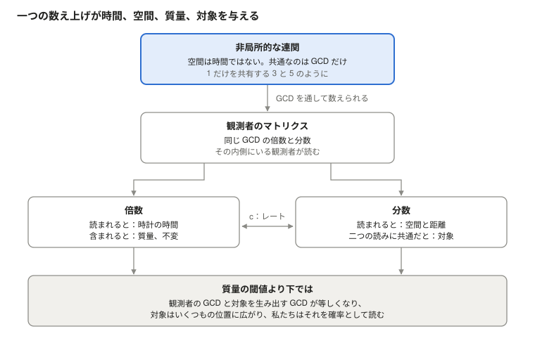

誰が物理法則を守らせているのか？ 物質が関係そのものなら、誰もいない
Ugo Lanciano（ウーゴ・ランチャーノ） · 独立研究者、イタリア・ロクリ · ORCID 0009-0008-7618-9635
バージョン 2.68.1, 2026-10-26 · Zenodo に保管: 10.5281/zenodo.23672394 · ライセンス CC BY 4.0 · レコードに記載のとおり、AI アシスタントの助けを借りて作成されました。
学生向け版の PDF は英語です： PDF（学生向け版）.
読む順番: 基礎：なぜ法則は成り立つのか · 次: MM 2.40.2
初めてですか？ 数学的物質性の概要：枠組み全体が 8 分で読めます。
MM レコード 2.68.1（DOI 10.5281/zenodo.23672394）の学生向け版です。アーカイブされた本文をもとに AI アシスタントの助けを借りて書かれました。アーカイブされた本文は Zenodo に保管されています。
Ugo Lanciano（ウーゴ・ランチャーノ）· ORCID 0009-0008-7618-9635 · 数学的物質性（Mathematical Materiality、MM）2.68.1 · 2026 年 10 月 26 日のアーカイブされた本文
内容。 この本文は、関係から出発して物理学を読む枠組みである数学的物質性（MM）を紹介します。基本的な考えを示し、それを一つの時計で試し、この枠組みが空間、対象、質量、量子力学、時間をどう読むかを述べます。最後に、哲学者からの四つの反論と著者の答えを報告します。
読み方。 この本文は物理学や哲学を学ぶ学生を対象としています。専門用語は、初めて出てくるときにすべて説明します。MM に固有の言葉は、最後の用語集にもまとめてあります。研究の進め方（登録、チェック、ファイル）は最後の節で述べます。
問い：誰が物理法則を保証しているのか？
物理法則はいつでもどこでも成り立ちます。ここにある電子と遠い銀河にある電子は、同じ規則に従います。それなのに、法則を守らせている者は誰もいません。自然界に警察官はいないのです。では、何が法則を保証しているのでしょうか。
数学的物質性（MM）の答えはこうです。物質は関係に従うのではなく、物質が関係なのです。この本文はこのテーゼを述べます。次に、明示された二つの前提のもとで、それを一つの時計で展開します。最後に、この枠組みが空間、対象、質量、量子、時間をどう読むかを示します。
三点で見る考え。
- 法則に番人はいません。法則を破るものがあったとしても、それは不従順なのではなく、別のものなのです。
- 関係の背後に世界はありません。私たちが見ている世界は、内側から読まれた関係の網です。
- 数学が世界に通用するのは、数学が、心の中で解き放たれた世界の関係の形だからです。
古典的な二つの答え。 この問いには伝統的な答えが二つあります。どちらも規則と物質のあいだに隔たりを残します。
- 第一の答えは、プラトン（Plato）のように、法則を「形相の天」、つまり事物から切り離された観念の世界に置きます。すると、法則がどのように物質に触れるのかがわからなくなります。
- 第二の答えは、法則を私たちの言語の中に置きます。法則は私たちが作った記述だ、というわけです。すると、言語がどのように世界を言い当てるのかがわからなくなります。
もっと最近の考えもあります。宇宙はコンピュータ・シミュレーションだ、というものです。この仮説は形相の天の代わりにプログラマーを置きます。Vazza（2025）は、宇宙をシミュレーションする機械に必要なエネルギーは誰にもまかなえないと見積もりました。
大反転。 MM は隔たりに橋を架けるのではなく、隔たりはないと言います。枠組みの中で、この動きは大反転と呼ばれます。科学はすでにこれを五回行ってきました。五つのものが実体のように見え、実は関係であるとわかったのです。
- 熱素：ある物体から別の物体へ熱を運ぶと考えられていた流体。
- フロギストン：物が燃えるときに物体から出ていくと考えられていた物質。
- 生命力：生きた物質と生きていない物質を区別すると考えられていたもの。
- エーテル：光がその中を伝わると考えられていた媒質。
- パリのキログラム原器：長いあいだキログラムそのものであった金属の円柱。今日では、キログラムはプランク定数に結びついた比によって定義されています。
そのたびに、世界は同じままでした。MM は同じ動きを最後の二つの項目、すなわち物質と法則に適用します。
枠組みの言葉。 本文全体に八つの言葉が繰り返し出てきます。ここではその意味だけで十分です。どの言葉も、必要なところと最後の用語集で改めて取り上げます。
- 連関：二つの異なる項のあいだの、出発点となる結びつき。基準となる例は、数 3 と 5 の結びつきです。
- 非局所的：空間と時間の中に位置を占めないこと。これは「前幾何学的」な意味、つまり幾何学より前にくる意味です。遠隔作用を意味するのではありません（§1）。
- GCD：最大公約数、つまり二つの項が共通にもつ唯一の部分。3 と 5 では 1 です。
- コピー：連関が数えられるときの、共通の単位の繰り返し。3 には 1 のコピーが三つ、5 には五つ含まれています。
- マトリクス：GCD の倍数と分数の集まりで、その内側にいる者によって読まれるもの。ここでの「マトリクス」は、線形代数の数の表を意味しません。倍数は時間として、分数は空間として現れます。
- 回折：観測者のマトリクスが分数に分かれて、一つの対象を与える仕方。
- 記録：観測者が集めたもの。計算の中では、AI が選んだ、観測者のマトリクスの翻訳です。
- AI の翻訳：著者の一文が計算可能な量になる仕方。これは一つの選択であり、本文ではそれを明記します。ある翻訳に依存する結果は、その翻訳に関わるものであり、前提に関わるものではありません。
説明的前提（AI）。 本文にはいくつかの「説明的前提（AI）」も含まれています。これは、著者の一文とその計算への翻訳とのあいだに、人工知能が提案した橋です。著者は 10 月 26 日にこれらを本文に受け入れました。これらは著者のテーゼではなく、著者には未解決の問いが残ります（§10）。
1. 出発点：二つの異なる項と、それらが共通にもつ唯一のもの
MM の哲学的前提は五つの文に収まります。それらは 3 と 5 の関係の論理形式をもっています。それらは MM の公準であり、アインシュタインが相対性理論の出発点としたものと同じ種類のものです。証明されるのではなく、その帰結によって評価されます。
算数の復習。 二つの整数は、1 以外に共通の約数をもたないとき、互いに素です。3 と 5 は互いに素です。6 と 9 はそうではなく、3 を共通にもちます。最大公約数（GCD）は、両方を割り切る最大の数です。最小公倍数（LCM）は、両方の倍数である最小の数です。3 と 5 では、GCD は 1、LCM は 15 です。
五つの前提：
- 始まりには差異があります。 あるのは事物ではなく、差異です。A は B と異なります。
- 存在するとは相互的なことです。 二つの存在は、共通にもつものを通してのみ、互いに対して存在します。共通のものが何もなければ、異なると言うことさえできません。
- ほかに共通のものをもたない二つの存在は、互いに素です。 出発点の二つの存在には、二つの異なる存在であるという事実、つまり二であること以外に、何も帰属させません。したがって、共通の合成された部分をもちません。3 と 5 のように互いに素です。6 と 9 が共有する 3 のような、より大きな共通部分は、第三の存在となり、もう一つの理由を求めることになります。
- 共通の単位は数えられます。 共通に残るのは単位だけです。GCD(3, 5) = 1。両方に属するためには、単位はそれぞれの中で数えられなければなりません。一方では三回、他方では五回です。何かがその中で繰り返すものには、部分、位置、距離があります。それは局所的に、つまり空間と時間の中に位置を占めるものになったのです。
- コピーは同じ単位です。 単位の三つのコピーは、三回数えられた同じ単位です。同じものの二つのコピーのあいだに距離はありません。したがって局所的な世界は、数に姿を変えて、出発点となった距離のない結びつきを自らの内に担っています。
最初の連関：空間と時間。 最初の連関は、空間と時間のあいだの連関です。その非局所相では、空間と時間は測度をもたない項です。あるのは論理的な区別だけです。空間は時間ではない、という区別です。両者が共有するのは GCD だけです。数えられるとき、それらは私たちが測る空間と時間になります。この相は遠くにある層ではありません。あらゆる場所、あらゆる瞬間に存在しています。
連関の四つの特徴。 3 と 5 の関係には四つの特徴があり、それが連関の特徴です。
- 仲介者がいません。 3 と 5 は 1 によって結ばれており、結びつきを運ぶ「あいだの」数はありません。これが「非局所的」の意味です。関係はある場所やある瞬間に位置を占めず、経路に沿って伝わることもありません。
- 項は関係より先にありません。 1 は使われるのを待っているレンガではありません。それは、二つの数が共通にもつ唯一のものとして現れます。
- 数えることが空間と時間を作ります。 最小公倍数 15 には 3 が五回、5 が三回含まれています。数えることから生じるマトリクスの中で、倍数は時間として、分数は空間として現れます。いくつかの数え上げが組み合わされるとき（§2）、時間はそれらの共通の増加であり、空間はそれらの広がり、つまり個々の数え上げが互いにどれだけ異なるかです。
- 数えることは連関を保存します。 GCD × LCM = 1 × 15 = 3 × 5。局所的な世界でどのように数えても、積は出発点の関係の積のままです。
説明的前提（AI）：なぜ数なのか。 数は空間と時間の量ではありません。非局所相では、空間と時間に測度はありません。3 と 5 は、一つの論理的状況の算術的な形です。単位だけを共通にもつ二つの異なる項、という状況です。数えることは前提 4 で入ってきます。共通のものは、両方に属するためには、それぞれの中に現れなければなりません。そして何度も現れることは、すでに数えることです。二つの数え上げが異なることは前提 1 から導かれます。等しい二つの項は一つになってしまうからです。具体例は時計のモデル（§2）に出てきます。そこでは静止の一歩 (1, 1) は光の二つの方向を区別しません。一方、(3, 5) のような互いに素な二つの数え上げの非対称性が、運動として読まれます。
AI による時間と空間の読み。 共通の単位に対しては、二つの操作ができます。掛けることと割ることです。掛け算は、増えていく合計の順序ある列を与えます。1、2、3 というように。割り算は、同じままの合計の異なる部分を与えます。内側から読むと、前者は私たちが時間と呼ぶもの、後者は空間と呼ぶものです。時間と空間は数えることより先にあるのではありません。同じ単位の蓄積と分割の物理的な名前なのです。
著者の言葉。 著者はこう述べています（10 月 10 日）。«esiste un gradino sottostante della realtà dove uno strato non locale di logica materiale ha in sé le caratteristiche per generare il gradino di spazio e oggetti sovrastante»（「現実にはその下にある段があり、そこでは物質的論理の非局所的な層が、その上にある空間と対象の段を生み出す特徴を自らの内にもっている」）。よくある誤りは、客観的な空間を必要な要素として出発点にすることだ、と著者は付け加えています。レコード MM 2.30 では、これは前幾何学的プログラムと呼ばれています。空間の幾何学を出発点とせず、枠組みから導き出さなければならないとするプログラムです。そのどこまでが実行されたかは、以下の節で述べます。
「非局所的」の意味
非局所性はこの枠組みの土台です。物理学の哲学では、この言葉には少なくとも四つの意味があります。MM はそのうち一つを用い、もう一つを帰結として導き、残りの二つを排除します。
復習：ベルの定理。 ベルの定理（1964）は、一緒に準備され、その後互いに遠く離れて測定される二つの粒子に関するものです。Bell は、三つの仮定が同時に成り立つなら、測定のあいだのある種の相関は再現できないことを示しました。
- それぞれの系は固有の性質をもち、測定はそれを明らかにする（分離性）。
- どんな影響も光より速く伝わらない。
- 測定する者は、何を測定するかをソースの状態とは独立に選ぶ（測定設定の独立性）。
実験はまさにその相関を見いだします。したがって、三つの仮定のうち少なくとも一つは捨てなければなりません。
「非局所的」の四つの意味と、MM によるその扱い：
- 位置をもたないこと（前幾何学）。関係はある場所やある瞬間に位置を占めません。MM では： これが枠組みの意味であり、著者が 10 月 13 日に確認しました。
- 非分離性（全体論）。系全体は、それぞれ固有の状態をもつ、空間的に分離した部分の和には還元されません。MM では： 前提の帰結です。連関のコピーは何度も数えられた同じ単位であり、別々の部分ではありません。
- ベル非局所性。 ベルの三つの仮定をもつどんな説明でも再現できない相関。MM では： 測定された相関はデータです。三つの仮定のうち、前提は第一の仮定である分離性を根元から捨てます。局所的媒介をもつループモデル（§5）では、結びつきはソースを通る光円錐に沿って行って戻りますが、このモデルは第三の仮定、つまりソースの状態からの測定設定の独立性を捨てます。遠隔の影響はありません。
- 遠隔作用。 影響や信号が、ある場所から別の場所へ光より速く伝わること。MM では： 排除されます。信号はなく、ツィレルソン限界は守られます（§5）。
著者の言葉。 10 月 10 日の文のほかに、非局所的なものがどのように局所的な世界に入るかを述べる三つの前提があります。
- 10 月 13 日、AI は「非局所的」を「空間と時間の中に位置を占めない」と読むことを提案しました。著者の答えはこうでした。«sì, vale anche per la lettura»（「はい、読みについても成り立ちます」）。
- 9 月 24 日：«MCD originale è il passaggio dallo stadio non locale al [locale] della realtà […] la matrice nasce come diffrazione di MCD nello spazio e nel tempo come elementi separati»（「元の GCD とは、現実の非局所的な段階から [局所的な] 段階への移行である […] マトリクスは、別々の要素としての空間と時間への GCD の回折として生まれる」）。
- 10 月 11 日：«è la base non locale della realtà che forza il cosiddetto presente ad una parte parziale della matrice di cui fa parte l'osservatore; il legame non locale "accende" solo parte della matrice totale»（「いわゆる現在を、観測者が属するマトリクスの部分的な一部分に強いているのは、現実の非局所的な基盤である。非局所的な結びつきは、マトリクス全体の一部だけを『点灯させる』」）。
説明的前提（AI）：どこにもなく、どこにでも存在する。 どこにもないものは「別の場所」にあるのではありません。それには「どこ」がないのです。局所的な世界では、それはコピーとして現れます。前提 5 により、どのコピーも、もう一度数えられた同じ単位です。このため非局所相は、空間に広がることなく、あらゆる場所、あらゆる瞬間に存在しています。どの場所も、どの瞬間も、そのコピーなのです。非分離性はここから導かれます。同じ単位の二つのコピーは、それぞれ固有の状態をもつ二つのものではありません。同じ連関の二つの読みなのです。
説明的前提（AI）：移行と現在。 著者の文の中で、元の GCD は蝶番の働きをしています。そこで、それまで区別されているだけだった空間と時間が、共通の要素を見いだします。次に連関が数えられ始め、マトリクス、つまり局所的な世界が生まれます。非局所相は遠い起源のままではありません。10 月 11 日の前提によれば、それはマトリクスの中で「点灯した」部分、すなわち観測者の現在を選び出します。そして 10 月 13 日の答えにより、「非局所的」の意味は読みについても成り立ちます。未解決の問いが三つ残っています（§10）。何が数え上げを始めさせるのか、何が点灯した部分を残りから区別するのか、どのような意味で読みは非局所的なのか、です。
主張していないこと。 非局所相は信号も影響も伝えません。今のところ、それに固有の実験的な痕跡はありません。枠組みの中では一つの前提です。その役割は、二つの事実に理由を与えることです。第一に、法則はどこでも同じであること（§7）。第二に、もつれた系の両端は一つの連関であること（§5）。系がもつれている（「絡み合っている」）とは、その二つの部分が、たとえ離れていても別々の状態をもたず、一方に対する測定が他方に対する測定と相関していることです。
近い考え。 ほかにもこれに似た考えがあります。
- David Bohm（1980）にとって、分離して見えるものは分割されない全体の中に折りたたまれており、彼はそれを「内蔵秩序」と呼びます。
- Mark Van Raamsdonk（2010）にとって、空間のつながりは量子もつれから生じます。
- 局所性とは別のテーゼとしての非分離性は Don Howard（1985）のもので、彼はそれをアインシュタインの中に見いだします。また「関係的全体論」を唱える Paul Teller（1986）のものでもあります。
- ベル非局所性と相対性理論の関係については、Tim Maudlin（2011）が基本文献です。

図 1. 同じ GCD の倍数と分数は、マトリクスの内側にいる者に読まれると、時間と空間です。含まれたり共有されたりするとき、それらは質量と対象です。第 2-6 節は、この図式を上から下へとたどります。
2. 3 と 5 でできた時計：数えることからアインシュタインの時間へ
反転は単なる考えではなく、一つの手続きです。時計の場合、明示された二つの前提のもとで、数値まで実行できます。結果はこうです。コピーを数える時計は、アインシュタインの固有時を示します。
相対性理論の復習。 固有時とは、持ち運ばれる時計が示す時間です。特殊相対性理論によれば、運動する時計は静止した時計より少ない時間を示します。時計が速さ v で動くなら、その因子は √(1 − v²) です。ここで v は光速を単位として測ります。時空図を使います。時間を縦軸に、空間を横軸にとると、光線は斜めの直線になります。時計の連続する二つの刻みのあいだには、光のダイヤモンド（因果ダイヤモンドともいいます）を描くことができます。これは、第一の刻みから右と左に一本ずつ出る光線と、第二の刻みに到着する光線で囲まれています。光の方向に沿って測ったダイヤモンドの二辺 a と b が、その一歩の光の辺、つまり光円錐座標です。
手続きは四つの段階からなります。
- 実体を取り除きます。 流れる時間のように、事物のように見える量をとり、それがどの関係なのかを問います。MM では、時計の時間は、それが数えるコピーから生じます。
- 関係を対として書きます。 基本の一歩は、二つの光の辺の対 a、b で記述されます。ここで、レコード MM 2.40 で B と呼ばれる前提が入ります。二辺は互いに素な整数であり、一歩は分割できない、という前提です。時計が静止しているとき二辺は等しく、一歩は (1, 1) です。動いているときは (3, 5) のように異なります。コピーは公倍数のところで生じ、光のダイヤモンドは a × b = GCD × LCM 個のセルを含みます。
- 二つの方向を組み合わせます。 C と呼ばれる第二の前提です。二つの反対方向は足されるのではなく、掛けられます。時計は二辺の幾何平均 √(a × b) を示します。足し算をする実験室は算術平均 (a + b)/2 を測ります。
- 既知の法則と比べます。 3 と 5 では、時計は √15 ≈ 3.873 を示します。実験室は (3 + 5)/2 = 4 を示します。二つの時間の比は 0.968 です。実験室では、一歩の時間は (a + b)/2、変位は (b − a)/2 です。速さはその比 (5 − 3)/(5 + 3) = 2/8、つまり光速の四分の一です。その速さに対して相対性理論は √(1 − 1/16) = 0.968 を与えます。同じ数です。
説明的前提（AI）：なぜ和ではなく積なのか。 連関の第四の特徴は、数えることが積を保存すると述べています。一歩のコピーは a × b = GCD × LCM 個のセルを満たします。したがって一歩の長さは、積を保存する操作で測らなければなりません。積 ab をとり、一回の数え上げのスケールに戻すためにその平方根 √(ab) をとります。これは、a × b の長方形と同じ数のセルをもつ正方形の一辺のようなものです。たとえば 3 × 5 の長方形には 15 個のセルがあり、15 個のセルをもつ正方形の一辺は √15 ≈ 3.873 です。一方、和 a + b は、二辺の非対称性が変わると変わります。
どの観測者の変更が連関を保存するか。 第一の観測者に対して等速運動する観測者に移ることは、一方の光の辺を因子 k で伸ばし、もう一方を同じ因子で縮めることを意味します。a は ka に、b は b/k になります。したがって積 ab = (ka)(b/k) は変わりません。因子 k は、Hermann Bondi の k 計算法（1964）の k です。k 計算法は、レーダーパルスのような光の信号だけで特殊相対性理論を行う方法で、そこでは k は相対論的ドップラー因子です。ここで k は、積を保存する変換として入ってくるのであり、それより前に置かれた仮定としてではありません。
アインシュタインの因子は前提 C とともに入ります。そこから先は恒等式、つまりつねに正しい等式です。算術平均は、二辺が等しいときを除いて幾何平均より大きくなります。その比はつねに √(ab)/((a + b)/2) = √(1 − v²) です。これは Bondi の k 計算法（1964）の恒等式です。Kevin Knuth と Newshaw Bahreyni（2014）は、ここからミンコフスキー計量とローレンツ変換を導いています。これらは、特殊相対性理論における時空の幾何学と、ある観測者から別の観測者に移る規則です。
割り当てられた場所があるかないか。 レコード MM 2.40 は、空間の哲学に関わるテストを加えています。A と呼ばれる第三の前提は、出来事はあらかじめ与えられた場所に置かれているのではない、と述べます。計算では、コピーはランダムに一様にばらまかれます。これは付け加えられた仮定です。前提はそれを動機づけますが、強制はしません。
説明的前提（AI）。 前提 A は、連関の第二の特徴（§1）を出来事に適用したものです。項は関係より先にありません。あらかじめ与えられた場所は、関係より先に存在する項になってしまいます。つまり、反転が取り除く容れ物になってしまいます。
テストは時間の二つの読み方を比べます。第一の読み方は、コピーの最長鎖を読みます。ダイヤモンドの最初の頂点から出発して、光円錐の内側でつねに未来に向かってコピーからコピーへと跳び、最後の頂点に到達できる跳びの最大数を数えます。第二の読み方は、二辺を掛けて √(ab) でコピーを数えます。
- 200,000 個のコピーをランダムにばらまくと、最長鎖を読む時計は 1% 以内で √(1 − v²) を示します。
- 一方、コピーが規則的なグリッド上にあり、場所が固定され、瞬間が全員に共通（同期）の場合、同じ連鎖は算術平均 (a + b)/2 を与えます。これはガリレオ（Galileo）の絶対時間で、運動によって遅れることはありません。場所が固定され、時刻がランダムに引かれる場合、遅れはローレンツの値を 7-29% 上回ります。
- 同じグリッド上で、二辺を掛けてコピーを数える時計は、0.43% 以内でアインシュタインの結果を取り戻します。
したがって、出来事の連鎖を読む時計にとって、出来事より先に固定された場所は特権的な座標系として働き、相対性を破ります。コピーを数える時計は、グリッド上でも相対性を取り戻します。
計算の前に、このレコードは登録済みの基準を書いていました。P1-P5 と呼ばれる一連のテストがいつ成功とされるかを、あらかじめ定めた規則です。レコードは、基準が満たされなかったことを明示しています。v = 0.8 での一つのテストが 6% の許容誤差の外に出たのです。
二辺より多い場合：対の規則（MM 2.40.2、10 月 25 日）。 時計に数えられた辺が n 本あるとき、「反対方向は掛けられる」という前提は二通りに拡張できます。n = 2 では二つの方法は一致します。
- 積の規則：時計はすべての辺の幾何平均を示します。
- 対の規則：異なる辺のすべての対について、辺を二つずつ掛け、その積を足します。Q = Σ xᵢxⱼ。時計は √Q を示します。たとえば三辺 x、y、z では Q = xy + xz + yz です。
説明的前提（AI）：なぜ対なのか。 連関は二つの項のあいだの関係です（前提 1）。辺が増えると、それぞれの対が一つの連関となり、対の規則は連関を足し合わせます。一方、n 辺の積の規則は、n 個の項のあいだの同時の関係ということになりますが、それは前提には含まれていません。
対の規則では、辺の共通の増加が時間であり、その広がりが空間です。n 本の辺は、一つの時間と、形の上で同等な n − 1 個の空間の方向を与えます。これは代数からわかります。m を辺の平均とすると、Q = [n(n − 1)·m² − Σ(xᵢ − m)²]/2 です。第一項、つまり共通の増加はプラスの符号をもち、時間です。第二項、つまり平均のまわりの辺の広がりは、マイナスの符号と n − 1 個の独立な方向をもちます。平均からの偏差の和はゼロになるからです。これが空間です。これはミンコフスキー計量の形 t² − x² − y² − z² です。三辺は 2+1 時空、つまり空間の二方向と時間の一方向を与えます。四辺は、私たちが観測する時空と同じ 3+1 を与えます。積の規則には、三辺以上ではローレンツ変換がありません。
計算が示すこと。 テストは、四つの独立な数え上げから作られた構造で行われました。
- 対の規則は、時空の次元として 4 に近い 3.92 ± 0.11 を与えます。この値は、端の効果を避けるため、調べた領域のほぼ完全に内側にある六つの区間で測ったものです。すべての区間では 3.61 です。ここで区間とは、一歩の光のダイヤモンドのような、二つの出来事のあいだの領域です。
- 第一の観測者に対して、運動する時計は相対性理論の遅れを 2% 以内で再現します。測定値と期待値の比は 0.981 と 0.998 です。積の規則は 12% ずれます。
- 登録済みの予測のうち二つは実現しませんでした。最長鎖から推定した次元（3.45）と、二人の観測者の比較です。
- 構造の等方性、つまりすべての方向が同等であることは、テストされていません。
- 全体では、20 のテストが合格、4 つが不合格、4 つが評価不能です。
すでに知られていたこと。 代数は既知のものです。これらは Zeeman（1964）、Derrick（1981）、Coll と Morales（1991）の「ヌル・フレーム」、つまり基準として使われる光の方向の組です。Knuth（2016）は、協調した連鎖では、一貫した測度が二本または四本の連鎖についてのみ存在すると報告しています。規則は、辺が何本あるかを述べません。四という数は入力であり、観測される時空に合うように選ばれています。次の節は、その一つの読みを提案します。
3. 次元はいくつか？ 二つは規則から、三つ目はデータから
MM は、空間の三次元を認めます。三次元を与えられたものとする現在の物理学と同じです。著者はこう述べています（10 月 25 日）。«MM ammette le tre dimensioni, è parimenti efficace per ora»（「MM は三次元を認める。今のところ同じように有効である」）。空間がなぜ三次元なのかについては、既知の議論があります。それらは軌道の安定性と、観測者が存在する可能性に関わるものです（Ehrenfest 1917; Tegmark 1997）。たとえば Ehrenfest は、三次元より多いと惑星の軌道は安定しないことを指摘しました。これらは議論であり、導出ではありません。
規則から二つの方向。 10 月 24 日の前提はこう述べています。«MCD ha il descrittore spazio, il descritto tempo e se stesso»（「GCD は、記述するものである空間、記述されるものである時間、そして自分自身をもつ」）。AI はこの三つの側面を三つの独立な数え上げと翻訳しました。対の規則では、三つの数え上げは一つの時間と二つの空間の方向を与えます。三つの数え上げから作られた構造のテストは、時空の次元として 2.98 ± 0.05 を与えました（MM 2.40.2）。
説明的前提（AI）：記述するものと記述されるもの。 AI は著者の二つの言葉を次のように読みます。記述するものとは、読む視点です。記述されるものとは、読まれるものです。空間は記述します。読みが事物を置く場所だからです。時間は記述されます。読まれると蓄積するものだからです。GCD が第三の側面であるのは、前提 2 がそれを必要とするからです。GCD は、二つが互いに対して存在するためのよりどころであり、どちらにも還元されません。9 月 27 日の前提も同じ三つの部分からなる構造をもっています。«top tempo, gli altri due spazio e specchio di se stesso»（「頂点が時間、他の二つが空間と自分自身の鏡」）。
現在は面です。 10 月 25 日の前提：«il 3+1 che misuriamo lo misuriamo in una complicazione di matrice in MM, non nel presente fisico, dove 2+1 è l'immediato che esiste»（「私たちが測る 3+1 は、MM ではマトリクスの複雑化の中で測っているのであり、物理的な現在の中ではない。現在では 2+1 が存在する直接のものである」）。2+1 は直接のもの、つまり現在に存在するものの幾何学です。空間の第三の方向は、読みが合成される仕方の中にあります。
出発点が面であるという考えには、よく知られた先例があります。ホログラフィー原理（'t Hooft 1993; Susskind 1995）です。これは、ある領域に含まれる情報を、ホログラムのように、それを囲む面の上に書くことができるという原理です。MM はその計算を引き継いではいません。
説明的前提（AI）：なぜ直接のものは 2+1 で止まるのか。 直接のものとは、三つの側面だけをもって一度に読まれた連関です。もう一つレベルが増えると、第二の時間ではなく、空間の第三の方向が与えられます。その理由は対の規則にあります。すべての数え上げの共通の増加はつねに一つのままで、それが時間です。一方、独立な数え上げがさらに加わるたびに広がりが増え、構成上、空間の方向が一つ加わります。
データから三つ目の方向。 なぜ直接のものの上に一つのレベルだけなのでしょうか。著者はこう答えています。«Perché così è fatta la matrice desunta dai dati»（「データから導かれたマトリクスがそのようにできているからである」）（10 月 25 日）。AI は、10 月 25 日の探索的な研究で、この追加のレベルの二通りの翻訳を比べました。この研究はまだ登録されておらず、第二のシステムによるチェックもまだ受けていません。
- 直接のものを繰り返す：積み重ねられた同じ紙のように、同じ面のコピーを積み重ねます。空間は平坦なままです。
- 倍数によって入れ子にする：入れ子の箱のように、各レベルを前のレベルの内側に入れます。空間は、双曲幾何学のように、数段階で曲がります。
双曲幾何学は負の曲率をもちます。ある点から離れるにつれて、使える空間が平坦な空間より速く増えます。馬の鞍がそのイメージを与えてくれます。
このテストは、空間の方向を数えるためのものではありません。構成上、直接のもの 2+1 に一つのレベルを加えることで、方向は三つに定まります。テストは形、つまり結果として生じる曲率を比べるためのものです。観測される空間は平坦です。それを示すのが曲率パラメータ Ω_k で、平坦な空間ではゼロです。測定値は Ω_k = 0.0007 ± 0.0019 です。これは、初期宇宙から残った放射を測定した Planck 衛星（2018 年の結果）と、バリオン音響振動を組み合わせたものです。バリオン音響振動とは、銀河の分布に残る太古の音波の痕跡で、物差しとして使われます。データは積み重ねを選びます。チェックすべき点が一つ残っています。このレベルが、他の三つと同等な第四の辺として対の規則に入ることです。そうであって初めて、空間の第三の方向は、観測される等方性が求めるとおり、他の二つと区別できなくなります。
すでに知られた結果。 入れ子のセルの階層が双曲幾何学を与えることは、既知の結果です。
- 物理学では、Brian Swingle（2012）がエンタングルメント繰り込みネットワーク（MERA）を、双曲的な反ド・ジッター空間の離散版として読んでいます。MERA ネットワークは、量子状態を層ごとに、しだいに大きなスケールで記述します。
- 数学では、Mario Bonk と Oded Schramm（2000）が、空間にそのスケールをもう一つの方向として加えると双曲空間が得られることを示しています。「双曲錐」です。
したがって「データは積み重ねを選ぶ」という結論は、未登録の研究だけに基づいているのではありません。
法則と歴史。 ここで MM は、哲学者の関心を引く境界線を引きます。枠組みの中で、対の規則を用いると：
- 関係の恒等性から導かれるものは法則です。アインシュタインの因子、共通の増加としての時間、広がりとしての空間です。
- 測定から読まれるものは歴史です。レベルの数、個々の質量の値、強い力の強さです。
質量について、著者は一つのイメージを用いています。«è come se da una casa completa e finita si dovesse derivare la storia di un singolo mattone»（「それは、完成し仕上がった一軒の家から、一個のレンガの歴史を導き出さなければならないようなものだ」）。モデルの中で電子の歴史がどのくらいの頻度で方向を変えるのかと尋ねられ、著者はこう付け加えました。«la parola quanto spesso in sé non esiste, ma è legata alla storia del singolo mattone che stai prendendo in considerazione»（「『どのくらいの頻度で』という言葉はそれ自体としては存在せず、今考えている一個のレンガの歴史に結びついている」）。MM はすべてを演繹すると約束してはいません。約束しているのは、読まれるものが矛盾なく一つの枠組みに収まることです。
4. 対象と質量：観測者が読むもの
MM の枠組みでは、数え上げの分数が対象と距離を与え、倍数が時間と質量を与えます。10 月 24 日の二つのレコードは、25 日に修正され、この二つのテーゼの翻訳をテストしました。対象については MM 2.62 と 2.62.1、質量については MM 2.64 と 2.64.1 です。修正版は、AI の選択が結果として提示されていた箇所を明記しています。
対象とは何か
著者のテーゼ。 観測される対象は、その局所的な関係においては自立しています。しかし、観測者のマトリクスの、分数への回折によって、観測者に結びついています。二人の観測者について、10 月 23 日の前提は、そのマトリクスが «pur non essendo globalmente uguale, è in larga percentuale uguale, tanto da legarsi alla stessa proiezione, ossia gli oggetti fisici in comune osservati»（「全体としては等しくないが、大きな割合で等しく、同じ射影、すなわち共通に観測される物理的対象に結びつくほどである」）と述べています。モデルはこの文をテストしていません。
説明的前提（AI）：「回折」の意味。 MM では「回折」は枠組みの用語です。AI はそれを光学との類推で読みます。回折格子は、多数の平行なスリットをもつ板です。それは一つの光の波を「次数」に分けます。それぞれが全体のはっきりした一部分である、別々の光線です。同じように、一つである観測者のマトリクスは分数に分かれ、読まれた分数が対象です。著者の存在論では、二人の観測者のマトリクスは大部分が重なり合っています。これにより、関係の背後に実体を戻すことなく、独我論、つまり観測者の心だけが存在するという考えを避けられます。以下の翻訳は、この重なりを二つの記録の共通部分として表します。ただし、二つの記録がなぜ一致するのかは導いていません。
近い考え。 最も近いものを先に挙げなければなりません。
- Wojciech Zurek の量子ダーウィニズム。系についての情報は、たとえば系が散乱する光の中に、環境へと何度もコピーされます。多くの観測者がそれを独立に読み、同じ値を見いだすことができます。Zurek は「相対的に客観的な存在」と呼んでいます。
- 関係的量子力学。系の状態はつねに別の系に相対的であるとする理論で、異なる観測者の視点のあいだの結びつきも扱います（Adlam と Rovelli 2023）。
ただし、私たちが調べたかぎりでは、対象そのものを二人の観測者の記録の共通部分として定義した研究はありません。
テストされた翻訳。 これは AI の選択です。観測者のマトリクスは、その記録によって表されます。二人の観測者が見る対象は、その記録の共通部分です。それは、それぞれが相手の記録を見ずに自分の記録から読み取り、相手と同じ値を見いだすものです。情報理論では、この量はガーチ–ケルナー共通部分と呼ばれます。モデルは量子ダーウィニズムのものです。二つの値をとりうる源があります。散乱した光子のような、多数の散らばった「担い手」があり、源の値をある誤差でコピーします。そして、それぞれ担い手の群を集める二人の観測者がいます。
結果：
- 成り立たない：「対象とは同じ統計をもつことである」という読み。それぞれ自分のコインを投げる二人の観測者は、表が半分、裏が半分という同じ統計を見いだしますが、同じ対象を観測しているわけではありません。
- 不適合だが、除外はされない：「対象とは共有された物質である」という読み、つまり同じ対象を見るには二人の観測者が同じ担い手を集めなければならないという考え。実際、モデルでは、それぞれ 63 個の担い手をもち共通の担い手が一つもない二人の観測者が、すでに百万分の一の精度で源の値について一致します。
- 整合：共通部分。コピーが不完全な場合、厳密な共通部分は記録を比較するまでゼロです。そこで不一致の小さな確率を許します。明示された許容誤差 δ = 10⁻⁶ で、コピーは十回に一回間違うとします。各観測者のコピーが 22 個までは、共通部分はゼロのままです。23 個のコピーで不一致は δ を下回り、対象全体が一度に現れます。δ = 10⁻³ と δ = 10⁻⁹ では、対応する数は 11 個と 37 個のコピーです。
- より多くの値をもつ対象は段ごとに現れます。ここでは源は十二個のセルのどれかにありえます。コピーはぼやけていて、セル一つ分間違うことがあります。許容誤差は同じです。82 個のコピーで、二人の観測者はセルのどちらの半分に対象があるかについて一致します。88 個でどの三分の一か、91 個でどの四分の一か、101 個で単一のセル、つまり対象全体について一致します。これらは、検証した読みのクラス内での下限です。
提案される読み。 対象は、読みより先に与えられた事物でも、私的な像でもありません。二つの読みが共通にもつものです。椅子がモデルから取り除かれるわけではありません。椅子は固有の状態をもつ構造の一部として残ります。このテーゼが取り除くのは、記録より先に与えられた追加の共通の対象です。このレコードは客観性を導いておらず、測定問題も解決していません。測定問題とは、量子力学において、可能性の重ね合わせがどのようにして観測される一つの結果を与えるのかという問いです。
質量とは何か
テーゼ。 同じ数え上げが、読まれるときには時間であり、観測点のマトリクスに直接含まれるときには質量です。
物理学はすでに質量と時間を結びつけています。
- すべての質量はリズムをもちます。コンプトン周波数 mc²/h です。ここで m は質量、c は光速、h はプランク定数です。物体の質量が大きいほど、リズムは速くなります。
- すべての物体は、どんな材料でできていても、10¹⁵ 分のいくつかの精度で同じように落下します。これが等価原理です。
説明的前提（AI）。 読まれた倍数は、一連の異なる出来事になります。時計の刻み、つまり時間です。含まれた倍数は、どの読みでも同じままです。観測者が刻みごとに物体をコピーすると、この部分は変わらないことを見いだします。読みのあいだで変わるものが時間であり、同じままのものが質量です。このため質量は不変量、つまり読みのあいだで変わらない量として現れます。これが、以下の翻訳 M-i がテストする読みです。
結果：
- 成り立たない：「部品の個数が重さをもつ」という読み、つまり重さをもつのは、部品を結びつけるエネルギーを除いて部品の質量を一つずつ足した和であるという考え。チタンと白金では結合が異なります。この読みでは、両者は 7.5 × 10⁻⁴ の差をもって落下することになります。チタンと白金の試験質量の落下を比較した MICROSCOPE 衛星は、約 10⁻¹⁵ の精度で差を見ていません。
- 整合：「含まれる」を物体の性質として扱う三つの読み。これらは恒等的に、または構成上、標準的な物理学と一致します。第一は、コンプトンのリズムとしての質量です。第二はコマール質量で、一般相対性理論において重力場から物体の質量を計算する方法です。第三は、区別できる状態の天井としての質量で、コンプトン周期あたり最大二つです（Margolus と Levitin 1998）。Margolus と Levitin の定理は、あるエネルギーをもつ系は、ある速さより速く完全に区別できる状態を通過できないと述べています。
- 翻訳 M-i（10 月 25 日）は、著者の言葉に最も近いものです。観測者は、自分の時計の刻みごとに同じ物体をコピーします。コピーのあいだで変わるのは読まれた時間です。同じままなのは含まれた倍数であり、その大きさが質量です。運動している観測者のあいだで共通に残るのは、すべての観測者が等しいと見いだす不変質量です。
得られる読み。 質量は物体の内部に閉じ込められた実体ではありません。読みを通じて同一であり続けるものです。これは Eugene Wigner（1939）が粒子を分類したのと同じ考えです。観測者間の変換の不変量としての質量です。三つの限界を述べなければなりません。今のところ、既知の物理学と異なる数を与える翻訳はありません。両立する読みは独立な証明ではありません。個々の質量は一つも導かれていません。
枠組みの中で、対象と質量は同じ数え上げの二つの面です。二人の観測者が共通に読む分数が対象を与えます。含まれた不変の倍数が質量を与えます。
5. 量子力学：確率が生じる場所
空間、時間、対象、質量を読むこの同じ枠組みは、量子力学を受け入れます。その予測を変えることはありませんが、確率がどこで生じるかを提案します。この時期の研究は、三つの前提（10 月 13 日と 22 日）、レコード MM 2.48（10 月 14 日）と 2.66（10 月 25 日）、そしてバージョン 2.48.1（10 月 26 日）にあります。
二つの復習。 ボルン則は量子力学の確率を与えます。ある結果の確率は、その振幅の絶対値の二乗 |ψ|² です。ツィレルソン限界は、四つの相関を一つの数にまとめる、ベルの定理の最もよく使われるテストに関するものです。どの系も固有で局所的な性質をもつなら、その数は 2 を超えません。量子力学は最大で 2√2 に達します。これがツィレルソン限界です。
信号のない非局所性。 量子もつれでは、離れた二つの系は、一方から他方へ何も直接伝わることなく、相関し続けます。MM にとって、これは連関の非局所相の痕跡です。ここで「非局所的」とは、空間と時間の中に位置を占めないことです。両端のそれぞれで、読みがボルン則をもつ量子状態の幾何（「ボルン幾何」）に従うなら、どの相関もツィレルソン限界 2√2 を超えません。最も精密な測定値は 2.82759 ± 0.00051 です（Poh ら 2015）。限界を定めるのは局所的な読みであり、非局所的な層ではありません。そしてこの枠組みの非局所性は実験と両立します。
説明的前提（AI）：非局所相とループ。 二つのレベルは二つの異なる仕事をします。
- 著者の前提である非局所相は、なぜ両端が一つの系なのかを述べます。それらは同じ連関の二つのコピーなのです。
- 2.48 における AI の翻訳であるループモデルは、測定された相関が光円錐の外の影響なしに再現されることを示します。ある出来事の光円錐は、光より速くない信号が到達できるすべての点を含みます。モデルでは結びつきはソースを通り、一方の端から他方の端へ直接伝わるものはありません。
ベルの定理の用語でいえば、前提は第一の仮定、つまり各系が固有の性質をもつという分離性を根元から捨てます。光円錐の中で書かれたモデルは、第三の仮定、つまり測定設定の独立性を捨てます。AI の読みでは、これらは足し合わされた二つの抜け穴ではなく、同じ事実を二つの側から見たものです。非局所相から見れば両端の統一であり、局所的な読みではループの閉合です。
モデルが前提を不要にするわけではありません。両端を一つの系にするには、ソースでの共通の起源で十分だという反論があるかもしれません。しかしループでは、ある結果の重みはソースだけから来るのではありません。行きと帰りを含む歴史全体の閉合から来ます。2.48 では、ループの閉合によって重みづけられた未来がボルン則を与えます。この閉じた歴史が一つのものであること、それを名指すのが非局所相です。未解決の点が二つあります（§10）。これが共通の起源に何かを付け加えるのかどうか、そして二つの側が本当に同じ事実なのかどうかです。
規則はコピーが決めます。 10 月 13 日の前提：«la regola la decide il numero e la correlazione reciproca delle copie del nesso»（「規則を決めるのは、連関のコピーの数と相互の相関である」）。AI はこれを Rafael Sorkin（1994）とともに読みました。
復習です。二重スリット実験では、スクリーン上の模様は、それぞれのスリットだけが与える模様の和ではありません。スリットの対に依存する追加の項、干渉があります。Sorkin はこれを二次の干渉と呼びます。スリットが三つあるとき、量子力学は新しい「三経路」の項を予測しません。すべては対に帰着します。
AI の読みでは、コピーの相互の相関は二次の干渉です。量子力学が要求するとおり、還元できない三経路の干渉はありません。ただし、この次数だけでは二乗 |ψ|² は定まりません。以下の計算は、前提が課していない仮定を加えています。対だけであること、そしてグラム行列、つまりコピーを二つずつ組にした積の表です。2.40 のチェッカーボードでは、ファインマンのチェッカーボードに似たモデルで、粒子は光の方向に沿って一歩ずつ進みます。各段階で「コイン」、つまり重みの小さな表が、直進の重みと曲がりの重みを決めます。経路が打ち消し合う暗い縞は、曲がりの重みが正でないとき、つまり負または複素数のときにだけ現れます。実数の重み（正と負）をもつコインは、虚数の重みをもつコインと同じ確率を与えます。
未来が過去を選びます。 著者は「何が読みを記録に書き込ませるのか」と尋ねられ、こう答えました（10 月 13 日）。«è il futuro di una storia che sceglie il suo passato; quindi la risposta alla tua domanda è il loop»（「歴史の未来がその過去を選ぶのである。だからあなたの問いへの答えはループである」）。この読みは既知のものです。Aharonov、Bergmann、Lebowitz の二時間形式（1964）、Cramer のトランザクション解釈（1986）、Wharton と Argaman の総説（2020）です。これらは逆因果的な読みであり、未来の境界が結果を定める助けとなります。
計算が示すこと：
- 結果を選ぶ未来がボルンの頻度を与えるのは、未来を重みづける特定の規則の場合だけです。たとえば、準備から未来へ行って戻るループの閉合によって各未来を重みづける場合です。この重みづけの規則、「未来の上の測度」は、モデルからは導かれず、公準のままです。
- 局所的媒介をもつ一重項のモデルは、すべての結びつきが光円錐の内側にある形で相関を再現します。一重項とは、ベル実験で使われる、反対のスピンをもつ二つの粒子の状態です。モデルでは、一方の端の未来の読みが定めたパラメータがソースに戻り、もう一方の端へ進みます。角度の法則、つまり相関が二つの測定のあいだの角度にどう依存するかは、仮定されています。観測可能な信号がないことは、ボルンの重みの場合にのみ成り立ちます。これはすでに Argaman（2010）が指摘していました。
- ボルンとは異なる重みで、第二の結びつき（仮定）を加えると、一つのビットが送り手の過去に戻ることがありえます。自分の過去に向けて送られる信号です。無矛盾な歴史は、いくらでもありそうにないものになります。「ありそうにない」から「存在しえない」への一歩は、著者の公準です。
説明的前提（AI）。 ボルンとは異なる重みは、無矛盾な歴史をいくらでもありそうにないものにします。それを不可能として排除することは、著者が行っているように、観測される現在がループの無矛盾な閉合を必要とすると仮定することに等しいのです。これは現在の条件についての議論であり、公準のままです。
代償。 哲学者にとっての代償はこうです。測定設定は状態から独立ではありません。未来がその準備に入り込むからです。MM は局所的媒介をもつ逆因果的な読みの中に位置づけられます。訂正： 2.48 は、MM をベルの定理の意味で非局所的と呼んでいた以前のバージョンを訂正しています。
量子的なふるまいが終わる場所。 10 月 22 日の前提：ある質量のレベルを下回ると、観測点の GCD と、対象を生み出す回折の GCD が、鏡のように等しくなります。そのとき対象はもはや一点にとどまらず、私たちはそれを確率として観測します。
説明的前提（AI）：比較される二つのセル。 1 に等しい GCD は、出発点の連関の GCD です。AI は局所的な数え上げの GCD を、その単位、つまりその数え上げが区別する最小のセル、すなわち分解能と読みます。観測者は自分のセルで読みます。対象は回折の中で固有のセルで生み出されます。観測者のセルが対象を生み出すセルより細かいあいだは、読みは対象を一か所に固定します。二つのセルが等しくなると、読みにはそれを固定するためのより細かい部分がなくなり、対象はいくつもの位置に広がります。粒と同じ大きさの目盛りをもつ定規で粒を測るようなものです。
閾値に数を与える試み（MM 2.66）。 レコード 2.66 は、AI が選んだ二つの GCD の読みを用いて、閾値に数を与えようとしました。距離、つまり位置の読みについては、限界は一つの質量ではなく、比であることがわかります。それは、見分けるべき大きさと、それを見分けるコピーのセルとの比であり、コピーの数も関わります。たとえばデコヒーレンスでは、セルは対象が散乱する光の波長であり、コピーは散乱した光子です。これは既知の物理学のデコヒーレンスと一致し、ここでは枠組みの規則として書かれています。デコヒーレンスとは、対象が環境（光、空気の分子）と情報を交換することで、重ね合わせのしるしを事実上失う過程です。
- AI の二つの読みはデータから導かれません。第一の読みは閾値を銀河の加速度に結びつけますが、170,000 原子質量単位を超えるナトリウムのクラスターは、なお干渉縞を与えます（Pedalino ら 2026）。第二の読みは閾値を陽子の質量、約 1 原子質量単位に置きますが、セシウム原子全体が 70 秒間重ね合わせにとどまります（Panda ら 2024）。
- ほかの閾値は可能なままであり、現時点では検証不能です。プランク質量（22 マイクログラム）または m_P/√2、観測者の質量（70 kg）、大きな質量の重ね合わせがひとりでに終わる Diósi と Penrose の型です。2035 年 12 月 31 日を期限とする予測が登録されています。
量子と古典の境界を、対象が記録の共通部分になる場所で読むことが提案されています。これは第 4 節と同じ対象の概念です。
コピーを数えることから得られるボルン則（10 月 26 日）。 著者のイメージ：«se dovete descrivere un 10 per mezzo di un numero 1, sarete costretti a distribuire il descrittore 1 in 10 spazio tempi del numero 10»（「10 を数 1 によって記述しなければならないなら、記述するもの 1 を数 10 の 10 の時空に分配せざるをえない」）。AI はこれを次のように翻訳しました。振幅を同じ大きさ（「絶対値が等しい」）の多くのコピーに分け、それぞれの結果にいくつのコピーが入るかを数えます。2.40 のチェッカーボードでは、この翻訳はテストしたすべての 66 個の有理数の比、つまり分母が 12 までの分数で、ちょうど |ψ|² を与えます。明示された三つの仮定が必要です。
- 確率が存在すること。
- 絶対値が等しいコピーは同じだけ数えられること。これは、分配された記述するものという前提を、AI が数学的に翻訳したものです。
- 確率は異なるコピーについて足され、合計が 1 になること。
説明的前提（AI）。 10 を、1 を十の場所に分配することで記述するなら、それぞれの場所には同じ 1 があります（前提 5）。仮定 2 はこの同一性を確率に翻訳します。コピーのあいだに差がないことが、絶対値が等しいコピーの等確率になります。これは明示された仮定であり、演繹ではありません。
無理数の比については、連続性も必要です。この構成は Zurek（2005）のものと類似していますが、違いが一つあります。ここでは等確率は前提として明示されており、導かれていません。これはまさに、Schlosshauer と Fine（2005）が Zurek の導出に対して異議を唱えている段階です。なぜほかのべきではなく、ちょうど二乗なのでしょうか。テストした指数の中で、2.40 のコインが一歩ごとに不変に保つのは、振幅の絶対値の二乗の和だけです。二乗はそこから、複素振幅および線形の重ね合わせとともに来ます。したがってボルン則は仮定なしに導かれてはいませんが、枠組みの中に明確な位置をもっています。
今日言えること。 今日、MM を標準的な量子力学から区別する実験はありません。もし閾値が質量であるとわかれば、MM は、重ね合わせがひとりでに途切れる収縮モデルのように、理論のテスト可能な修正になるでしょう。現時点での寄与は一つの場所です。確率は、観測者のマトリクスと対象の回折が等しくなるところで生じます。
6. 時間：奥行きのある現在と、増大する方向
MM では、時間は容れ物の中を流れるのではありません。現在には奥行きがあり、過去とは現在が含むものです。時間の方向は、著者にとって、観測者のマトリクスの中の関係の増大です。
二つの時間。 9 月 24 日の前提：«il tempo fermo del presente può essere profondo fino a 13 miliardi di anni, poi c'è il tempo che percepiamo passare»（「現在の止まった時間は 130 億年の深さまでありうる。その次に、私たちが過ぎていくと感じる時間がある」）。第一の時間は奥行き、つまり蓄積された読みの集まりです。第二の時間は時計の局所的なリズムです。
現在の読みとしての始まり。 10 月 20 日の前提の言い換えです。真の時間はマトリクスの時間であり、そこでは最初の連関がどこにでも存在しています。私たちが宇宙の始まりと呼ぶものは共通の回折であり、観測者の現在の中に客観的に存在するものではありません。
時代ではなく状態。 著者は時代で考える人々を正しています。宇宙の「最初の数分間」についての質問に、著者はこう答えました。«ma i primi minuti esistono per MM? tu pensi ancora per oggetti»（「だが、最初の数分間は MM にとって存在するのか？ あなたはまだ対象で考えている」）。問いは、場所と時代ではなく、物質の状態と組織の変化の言葉で立てるべきです。
レコード MM 2.58（10 月 21 日）は、このようにして原始重水素を扱っています。標準的な宇宙論では、最初の数分間に形成された重い水素です。今日測定される存在量は、現在の読みです。それらは最初の原子核がどのように形成されたかの理論である標準的な元素合成で計算されます。このように計算された存在量は、銀河にまで達する一連の計算（MM 2.58）の入力として使われ、その計算は標準モデルと同じ程度にデータと合致します。枠組みの中では、存在量は現在の読みです。「最初の数分間」という語りは、既知の物理学がそれらの読みを説明する仕方のままです。
時間の方向。 10 月 24 日の前提：方向とは «l'ampliamento del numero di relazioni legate a rete dentro la matrice dell'osservatore»（「観測者のマトリクスの中で網状に結ばれた関係の数の拡大」）です。既知の物理学は時間の矢を、熱いものから冷たいものへ向かう熱に結びつけます。しかし、部分のあいだに初期相関があると、熱が冷たいものから熱いものへ流れる実験があります（Micadei ら 2019）。
著者は二つの矢を結びつけないよう注意を促しました。«la direzione del calore potrebbe in certi casi essere contraria alla complicazione della matrice»（「熱の方向は、場合によってはマトリクスの複雑化に反することがありうる」）。2.64.1 では、AI はマトリクスを、空の状態から始まって観測された部分をコピーするメモリセルの記録として翻訳しました。メモリはビットで数えられます。一ビットは、はい・いいえの答え一つの情報です。どの試験系にも、記録と熱が反対方向に進む瞬間があります。
- Micadei の試験系は、その実験を再現します。初めに相関があり、温度の異なる二つのスピンです。熱が逆向きに、冷たいものから熱いものへ流れるすべての 2198 の瞬間で、記録は 0.365 から 1.166 ビットをもちます。熱が逆流するあいだ、メモリは増えます。
- 一方、熱が冷たいものから熱いものへ流れるために消費する、二つのスピンのあいだの相関そのものがメモリである場合、熱が逆流するたびにメモリは減ります。
ここから一つの分離が導かれます。記録の矢と熱の矢は反対方向を指すことがありえます。先例は、Jennings と Rudolph（2010）の「矢の階層」と、Latune ら（2019）の矢の反転をともなわない熱の反転です。今のところ、既知の物理学と異なる予測を与える読みはありません。
一つの問い。 著者の三つの文はどのように整合するのでしょうか。第一は、過去の射影としての記録です。«c'è solo il passato»（「過去しかない」）（9 月 24 日）。第二は 10 月 24 日の方向です。第三は未来が過去を選ぶループです。この問いは第 10 節で取り上げられ、このバージョン 2.68.1 で閉じられます。
説明的前提（AI）：四つのレベル。 三つの文は、時間をもたない層の上にある、枠組みの異なるレベルについて語っているのかもしれません。
- 非局所的な層。 そこでは空間と時間は区別されているだけで、測度をもちません。前も後もありません。
- 単一の読み。 どの読みが書かれるかは、準備と未来の結果のあいだのループの閉合の中で決まります。«il futuro sceglie il passato»（「未来が過去を選ぶ」）。AI の局所モデルでは、これは光円錐に沿って行って戻る結びつきを通して起こります。これは、すでに書かれたものではなく、読みがどのように書かれるようになるかに関わります。
- 書かれた記録。 書かれたものは過去です。記録には読みがやって来る空間の方向はなく、あるのは奥行きだけです。«c'è solo il passato»（「過去しかない」）。
- 記録の増大。 書かれた関係の数が増えます。これが時間の方向です。«l'ampliamento delle relazioni»（「関係の拡大」）。
この読みでは、これらの文は互いに矛盾しません。ループは何が記録に入るかを決めます。記録は過去だけを含みます。その増大が矢です。著者は 10 月 26 日にこの読みを受け入れました。それを翻訳した計算を以下に示します。
単一の計算（バージョン 2.68.1 で新たに追加）。 AI は四つのレベルの読みを一つのモデルに翻訳しました。基準は計算の前に登録されました。モデルは四つの部品を組み合わせています。
- 2.48 のループが読みの歴史全体を選びます。
- 2.64.1 の記録が、空の状態から始まるセルに結果を受け取ります。
- «c'è solo il passato»（「過去しかない」）は、未来から過去への信号を排除する厳密な条件になります。歴史がそこで止まっても、さらに別の読みに続いても、最初の読みの統計は同じままでなければなりません。
- 方向は、ビットで数えられた記録の増大です。
試験系は二つあります。三つの読みをもつ 2.40 のチェッカーボードと、四つの読みと熱をもつ Micadei の試験系の二つのスピンです。
主な結果。 未来がループの閉合によって選ぶとき（ボルン則を与える 2.48 の規則）、三つの文は互いに矛盾しません。
- 歴史がそこで止まっても続いても、最初の読みは同じ統計をもちます。実際、すでに書かれたセルは、構成上変わりません。
- 記録は読みごとに増え、ボルンの頻度を与えます。
- 熱の試験系では、平均でも、最も確率の高い歴史に沿っても、記録が増えるあいだ、熱は反対方向に進みます。
期待より弱かった二つの結果。
- チェッカーボードでは、記録の増大はあらかじめ定めた閾値を下回ります。0.5 に対して、第二の読みで 0.29 ビット、第三の読みで 0.17 ビットです。その理由は、準備によって最初より後の読みがほとんど予測可能になることです。
- 「過去だけ」は、それだけではボルン則を選びません。テストした四つの規則のうち、それを厳密に守るのはループの閉合だけです。しかし、あらかじめ定めた閾値では、それを明確に破るのは最も極端な規則、つまり未来が決定論的に選ぶ規則だけです。しかもそれを破るのは、「未来の重み」の二つの翻訳のうちの一方でだけです。各歴史に未来の成分を一つだけ与える、2.48 で使われた翻訳（「vettore」規約）です。歴史の環境の成分を足し合わせるもう一方の翻訳（「blocco」規約）では、四つの規則のどれも閾値を超えません。ランダムな未来と決定論的な未来の数値はこの翻訳に依存しますが、ループの閉合の数値は依存しません。
未来が選ぶもの。 著者は、計算のように未来が読みの列全体を一つの閉じたループで選ぶのか、それとも一つ一つの読みを別々に選ぶのかと尋ねられました。著者は計算の後、10 月 26 日にこう答えました。«come nel conto perché la piramide concettuale è determinata dalla direzione imposta al suo vertice»（「計算のとおりである。概念のピラミッドは、その頂点に課された方向によって決まるからである」）。未来が歴史全体を選ぶという計算で採用された翻訳は、著者の答えと一致しています。
7. なぜ誰も法則を守らせる必要がないのか
前提を受け入れるなら、反転は、古典的な答えが理由なしに残している三つの事実に理由を与えます。法則に番人はいないこと、法則はどこでも成り立つこと、法則は数学的であることです。三つの帰結が導かれます。宇宙に機械は必要ないこと、光速に外部からの正当化は必要ないこと、世界は消えないことです。
法則に番人は必要ありません。 3 と 5 は GCD が 1 であるという事実に「従う」のではありません。それらはその事実なのです。共通の約数があれば、それらは不従順な 3 と 5 ではなく、別の数です。物質が関係であるなら、法則を破るものは罰せられるのではなく、そこに存在しないのです。法則の必然性は、算術と同じように、同一性の必然性になります。
法則はいつでもどこでも成り立ちます。 古典的な答えにとって、法則の普遍性は生の事実、つまり理由なしにただそこにある事実です。反転では、どの「ここ」も、どの「今」も同じ連関のコピーであり、同じ単位の二つのコピーのあいだに距離はありません。二つの場所が異なる法則をもつことができないのは、1 の二つのコピーが二つの異なる単位ではないのと同じ理由です。法則の普遍性とは、局所的な世界の内側から見た連関の非局所性です。この議論は法則に関わるものです。第 3 節が歴史と呼ぶ値、たとえば個々の質量は、測定から得られます。
法則は数学的です。 Eugene Wigner（1960）は、自然科学における数学の「不合理なまでの有効性」について語りました。反転では、数学が世界に通用するのは、数学が世界の関係の解き放たれた形だからです。これは著者の第三の答え（第 10 節）についての AI の読みです。局所的な世界は数え上げでできており、数えることは算術です。
機械はありません。 宇宙は、どこでも、どの瞬間にも、数え上げからなる厳密な規則に従っています。しかし、それを実行する機械はなく、それを書いたプログラマーもいません。関係の構造は、存在するために計算される必要がありません。シミュレーションは実行される必要がないことは、すでに Max Tegmark（2008）が指摘していました。Vazza（2025）は、それを機械の上で実行するには、宇宙の法則が許さない資源が必要になると見積もりました。宇宙はシミュレーションのようにふるまいますが、シミュレーションではありません。
交換レートとしての光速。 相対性理論では、光速は出発点の原理です。MM では、光速は同じ GCD の倍数と分数のあいだの固定された交換レート、つまり時間の一歩が空間のどれだけに相当するかです。二つの通貨のあいだの交換レートのように働きます。それを超えることは、ある観測者にとって、時間を数えずに空間を進むこと、つまり局所的な世界の外に出ることを意味します。
このレートは必然的な相対です。系の内部では、誰にとっても同じで超えることのできない絶対的な仮定となります。系の外では、それには何の根拠もありません。外には、それと関係づけるほかの項がないからです。その理由を外側から求めるのは、北極点の北に何があるかを問うようなものです。
世界は消えません。 歴史上の五つの反転で、世界は同じままでした。消えたのは実体であり、事物ではありません。ここでも同じです。テーゼは、世界が存在しないということではありません。関係の背後に世界はない、私たちが見ている世界は内側から読まれた関係の網である、ということです。
8. ほかの考えの中の MM：近い考えと相違点
MM は存在論的構造実在論の一形態です。これは、基礎的なレベルにあるのは固有の性質をもつ事物ではなく、構造、つまり関係であるというテーゼです。MM は穏健な変種に近いものです。どの構造があるのかを述べ、それを算術で展開します。MM のテーゼのほとんどには、既知の近い考えがあります。以下の一覧では、まずそれらの名前を挙げ、MM が何を共有し、どこで分かれるかを述べます。
最も古いものは、著者が執筆しているのと同じイオニア海の海岸で生まれました。ピタゴラス（Pythagoras）は紀元前 530 年ごろからクロトンに住み、教えました。書物を公にした最初のピタゴラス学派である ピロラオス（Philolaus）も、クロトンと結びついています。
- ピタゴラス主義（クロトンのピタゴラス、紀元前 530 年ごろ。Philolaus、断片 1 と 4。アリストテレス（Aristotle）『形而上学』I 5）。主張： 世界の秩序は無限定なものと限定するものから構成されている。知られるものはすべて数をもつ。アリストテレスによれば、ピタゴラス学派は事物は数であると言った。MM との共通点： 尺度としてだけでなく、世界の構造としての数。MM が分かれる点： MM は事物が数であるとは言わず、ピロラオスの断片もそうは言っていません。物質は関係であり、数は互いに素な二つの項のあいだの連関の形です。
- 存在論的構造実在論（Ladyman 1998; Ladyman と Ross 2007）。主張： 基礎的なレベルには構造だけがある。最も粗い形では「事物はなく、構造がすべてである」。共通点： 関係は事物より先にある。MM が分かれる点： MM はどの構造かを述べます。GCD だけを共通部分とする、互いに素な二つの項です。Esfeld と Lam（2008）の穏健な形のように、項と関係は一緒に生じます。
- 位置をもたないことと非分離性（Bohm 1980; Howard 1985; Teller 1986; Van Raamsdonk 2010）。主張： 分離して見えるものは分割されない全体の中に折りたたまれている。全体は部分に還元されない。空間のつながりは量子もつれから生じる。共通点： 基礎は空間の中になく、系の両端は別々の部分ではない。MM が分かれる点： MM では、全体は出発点で与えられた量子状態や物理的秩序ではありません。互いに素な二つの数という算術的な形をもち、GCD を通して数えられる、空間と時間のあいだの連関です（§1）。
- 数学的宇宙（Tegmark 2008）。主張： 物理的現実は数学的構造である。数学的存在と物理的存在は一致し、したがってすべての構造は一つの宇宙である（Tegmark の「レベル IV」）。共通点： 機械はない。構造は存在するために実行される必要がない。MM が分かれる点： 存在するのは私たちの構造だけです。ほかのものはそれに基づく心の中の区別であり、外からの視点はありません（§10）。
- 必然化する法則（Armstrong 1983）。主張： 法則は普遍者、つまり一般的な性質のあいだの必然化の関係であり、偶然的である。別様でありえた。共通点： 法則は単なる規則性ではない。MM が分かれる点： MM には物質に作用する追加の関係はありません。必然性は同一性の必然性です。
- 支配しない法則（Beebee 2000）。主張： 法則は事実を最もよく体系化する規則性であり、何も支配しない。共通点： 法則に番人はいない。MM が分かれる点： MM にとって法則は必然的であり、事実の最良の要約にとどまるものではありません。
- 原始的法則（Maudlin 2007）。主張： 法則は世界の原始的な成分であり、ほかの何ものにも還元されない。共通点： 法則は事実に還元されない。MM が分かれる点： MM は法則を原始的とはしません。法則は連関が何であるかから導かれます。
- 傾向性本質主義（Bird 2007）。主張： 法則は性質の本質から導かれ、形而上学的に必然的である。傾向性とは、ガラスの壊れやすさのように、ある仕方でふるまう性向です。共通点： 最も近い立場である。項が何であるかから来る必然性。MM が分かれる点： MM は傾向性の代わりに算術的な関係を、性質の代わりに連関を置きます。
- 創発時空（Huggett と Wüthrich 2025）。主張： 量子重力の理論では、時空は基礎的なものではない。共通点： 空間は出発点の舞台ではない。MM が分かれる点： MM ではこれは一つのプログラムです。数えることから時間が生じ、AI の翻訳によって空間の二つの方向が生じます。三つ目はデータから来ます。
- 数え上げからの時空（Bondi 1964; Knuth と Bahreyni 2014）。主張： 固有時は二つの数え上げの幾何平均である。ミンコフスキー幾何学とローレンツ変換はそこから導かれる。共通点： 幾何平均と算術平均のあいだの恒等式。MM が分かれる点： MM では、二つの数え上げは互いに素な光の辺であり、コピーには割り当てられた場所がありません（§2）。
- It from bit（Wheeler 1990）。主張： すべての物理的なものは、はい・いいえの答えという情報的な起源をもつ。共通点： 区別の結果としての物理的世界。MM が分かれる点： MM にとって on/off は心の解き放たれた区別です。物理的な区別は空間と時間として書かれます（§10）。
- 量子ダーウィニズム（Zurek 2009）と関係的視点（Rovelli 1996; Adlam と Rovelli 2023）。主張： 客観性は、環境の中の冗長なコピーから、あるいは視点のあいだの結びつきから生じる。共通点： いくつもの読みが一致するものとしての対象。MM が分かれる点： MM は、対象を二つの記録の共通部分として読むことを提案します（§4）。
- 逆因果性（Aharonov、Bergmann、Lebowitz 1964; Cramer 1986; Wharton と Argaman 2020）。主張： 未来の境界が結果を定める助けとなる。共通点： 未来が過去を選ぶ。MM が分かれる点： MM は、著者の公準として、ボルンの重みをループの無矛盾性に結びつけます（§5）。
- 質量依存の収縮（Diósi 1987; Penrose 1996）。主張： 大きな質量の重ね合わせはひとりでに終わる。共通点： 量子的なふるまいの質量の閾値。MM が分かれる点： MM では、閾値は二つの GCD が等しくなるところです。距離については、質量ではなく比であることがわかります（§5）。
MM に固有なのは、これらのテーゼのどれか一つではありません。互いに素な二つの項という連関の形であり、一つの形が法則、空間、時間、質量、対象、確率を一緒に読むという事実です。
9. 何が計算に基づき、何が前提か
この文書には二十一のテーゼが含まれています。表は、それぞれが何に基づいているかを示します。カテゴリーは七つあります。
- 前提：証明されない、枠組みの出発点（六つのテーゼ）。
- 既知の恒等式または定理：すでに証明された等式または定理（二つのテーゼ）。
- 登録済みの計算：予測と基準を登録した後で行われた計算（七つのテーゼ）。
- 既知の物理学と整合：翻訳が今日の物理学と一致する（三つのテーゼ）。
- 測定のデータ：測定から読まれる値（一つのテーゼ）。
- 未登録：行われたが、まだ公表されていない研究（一つのテーゼ）。
- 未完：完了していない研究（一つのテーゼ）。
第二列は、著者の一文がどのように計算に翻訳されたかを示します。翻訳はつねに一つの選択であり、ほとんどの場合 AI の選択です。そして結果はその翻訳に関わるものです。
| 著者のテーゼ | テストのためにどう翻訳されたか | 結果 | 備考 | 箇所 |
|---|---|---|---|---|
| 物質は関係である。法則は同一性の必然性である | — | 前提 | 枠組みの公理 | §1, §7 |
| 連関は互いに素な二つの項のあいだの関係である | — | 前提 | その帰結によって評価される | §1; MM 2.30 |
| 存在するとは相互的なことである。関係の外には何もない | 四段階の議論（AI の読み） | 前提 | Lewis と Tegmark に対して補強すべきもの | §10 |
| 時間はコピーから生じる。反対方向は掛けられる（前提 B と C） | 時計 √(ab) と実験室 (a + b)/2 の比較 | 既知の恒等式または定理 | Bondi の k 計算法。Knuth と Bahreyni | MM 2.40 |
| 出来事には割り当てられた場所がない（前提 A） | ランダムにばらまかれたコピーと場所のグリッドの比較 | 登録済みの計算 | 最長鎖：場所なしでアインシュタイン、同期グリッドでガリレオ。基準 P1-P5 は満たされず | MM 2.40 |
| 反対方向は掛けられる、辺がより多い場合も | 対の規則と積の規則の比較 | 登録済みの計算 | 既知の代数。20 のテストが合格、4 つが不合格、4 つが評価不能 | MM 2.40.2 |
| GCD は、記述するものである空間、記述されるものである時間、そして自分自身をもつ | 三つの数え上げとしての三つの側面（AI） | 登録済みの計算 | 時空 2+1、次元 2.98 | MM 2.40.2 |
| 直接のものの上の一つのレベルは、データから読まれる | 積み重ねと入れ子の比較（AI） | 未登録 | 構成が第三の方向を定める。データは平坦な積み重ねを選ぶ | §3 |
| 対象は、観測者のマトリクスの、分数への回折である | 二つの記録の共通部分（AI：マトリクスは記録によって表される） | 既知の物理学と整合 | 量子ダーウィニズムのモデルにおいて | MM 2.62.1 |
| 質量は観測点のマトリクスに含まれた倍数である | M-i。コンプトンのリズム、コマール質量、Margolus と Levitin | 既知の物理学と整合 | 恒等的に、または構成上一致する | MM 2.64.1 |
| 個々の質量とレベルの数は歴史であり、法則ではない | — | 測定のデータ | 家とレンガ | §3 |
| 信号のない非局所性 | ボルン幾何による局所的な読み | 既知の恒等式または定理 | ツィレルソンの定理 | MM 2.48 |
| 規則を決めるのは、コピーの数と相互の相関である | Sorkin とともに、二次の干渉（AI） | 登録済みの計算 | 暗い縞は正でない重みの場合のみ。ボルン則は導かれない | MM 2.48 |
| 歴史の未来がその過去を選ぶ | 重みづけられた未来。局所的媒介をもつ一重項 | 登録済みの計算 | ボルンは未来の上の特定の測度の場合のみ。ボルンの重みは公準による | MM 2.48 |
| 質量の閾値より下では、二つの GCD が等しくなる | 二つの GCD の読み（AI） | 登録済みの計算 | 質量だけの閾値は今日定まっていない。距離については比。2035 年までの予測 | MM 2.66 |
| 記述するもの 1 は 10 の時空に分配される | 絶対値が等しいコピーは同じだけ数えられる（AI） | 登録済みの計算 | 三つの仮定のもとで |ψ|²、分母は 12 まで | MM 2.48.1 |
| 方向とは、観測者のマトリクスの中の関係の拡大である | 空の状態から始まるメモリセル（AI） | 既知の物理学と整合 | どの試験系にも、熱と反対方向の瞬間がある | MM 2.64.1 |
| 物理的なものは時空、数学的なものは on/off である。連関は c であり、数学は速さの概念である | 三つの答えについての AI の読み | 前提 | 10 月 26 日の答え | §10 |
| 光速は倍数と分数のあいだの交換レートである | — | 前提 | 必然的な相対、系の内部では絶対的 | §7 |
| 空間は数えることから生じる | 前幾何学的プログラム | 未完 | AI の翻訳による時間と二つの方向。三つ目はデータから | MM 2.30, §3 |
| 連関は、その非局所相では空間にも時間にもない。元の GCD は局所的なものへの移行であり、非局所的な結びつきが現在を「点灯させる」 | — | 前提 | 9 月 24 日と 10 月 11 日の前提。意味は 10 月 13 日に確認 | §1 |
説明的前提（AI）は表には現れません。それらはテーゼとその翻訳のあいだの AI の橋であり、ときに著者の以前の定式化（9 月 27 日、MM 2.30）を思い起こさせます。テストされた追加のテーゼではありません。
10. 哲学者からの四つの反論とその答え
哲学者は少なくとも四つの反論を提起するでしょう。著者は 10 月 26 日に最初の三つに答えました。著者の言葉は引用符の中にあり、それぞれに続く展開は AI による読みです。第四の反論には前提が答えます。節の終わりに、未解決のまま残る問いを挙げます。
反論 1. 物理的な構造は、任意の数学的構造と何が違うのか？
これは Bas van Fraassen（2006）が構造実在論に対して提起する反論です。世界が構造であるなら、物理的なものと数学的なものの違いは消えてしまうように見えます。この反論は Tegmark にも当てはまります。
著者の答え： «il linguaggio usato: spazio tempo contro on off mentale»（「使われる言語である。時空と、心の on/off との対比である」）。
AI の読み。 区別は同じです。変わるのは、それが書かれる言語です。物理学は、空間と時間として、つまり最初の連関として書かれた区別です。心の数学は、on と off に解き放たれた同じ区別です。
先例が二つあります。
- カント（Kant）にとって、空間と時間は直観のア・プリオリな形式、つまり主体があらゆる経験を受け取る仕方です。数学はそれらに基づいています。しかし、それらは主体の形式です。
- Peter Strawson（1959）にとって、個別者、つまり単独の事物は、空間と時間の枠組みの中で同定され、物体が基本的な個別者です。
MM は空間と時間を、知る者から事物へと移します。それらは現実の最初の連関であり、心の形式ではありません。
反論 2. なぜ私たちの構造だけが存在するのか？
Tegmark は、すべてがそれぞれ一つの宇宙として存在すると答えます。Wittgenstein（ウィトゲンシュタイン）の「語りえぬものについては、沈黙しなければならない」を引用するだけでは足りません。議論が必要です。
著者の答え： «nel mentale il distinto on off si libera, ma ha bisogno di un relativo di partenza, ossia lo spazio tempo. È l'argomento uguale alla velocità della luce»（「心の中では on/off の区別は解き放たれるが、出発点の相対、すなわち時空を必要とする。これは光速についての議論と同じである」）。
AI の読み。 議論は四つの段階からなります。
- 存在するとは別のものに対して存在することです（前提 2）。あらゆる存在には相対、つまりそれに対して存在する何かが必要です。
- 心の中の区別は自由に変化できますが、出発点の相対に対してのみ存在します。その相対が時空です。
- 光速と同じように、出発点の相対は系の内部では必然的で絶対的であり、系の外では根拠がありません。
- 私たちの構造と共通の項をもたない構造には、相対がありません。それが存在すると言うことも、それを二つ目として数えることさえもできません。共通のものが何もなければ、二つの存在は異なると言うことさえできないからです。
この議論は、私たちの構造を含むどの視点からも、別の構造の存在を主張できないことを示します。「主張できない」から「存在しない」への一歩は前提 2 が担います。存在するとは別のものに対して存在することだからです。ほかの数学的構造は存在しますが、私たちの構造に基づく心の中の区別として存在します。こうして Wittgenstein の文は、引用ではなく、一つの議論の結論になります。
反対の立場は David Lewis（1986）の様相実在論です。可能世界は空間と時間において互いに孤立しており、それでもすべて存在するとします。MM は同じ前提 2 によってこれを退けます。この前提は、何とも関係しない絶対的な存在を否定するからです。
最も近い先例は Rudolf Carnap（1950）です。Carnap にとって、あらゆる言語的枠組みの外で問われる存在の問いは、文字どおりにとれば意味をなしません。枠組みの選択についての実践的な問いとしてしか読めません。MM は同じ一歩を踏み出しますが、その枠組みは選ばれた言語ではなく、現実の出発点の相対です。
第二の先例は、数学における直観主義の創始者 L. E. J. Brouwer です。直観主義の「第一の行為」では、数学は心の言語をもたない活動であり、時間の動きの知覚から生じます。あらゆる質を取り去ると、「二なるもの」は、Brouwer が基本的な直観とする空虚な形式を残します（ケンブリッジ講義、1981、pp. 4-5）。これは MM の前提 3、«nient'altro che l'essere-due»（「二であること以外の何ものでもない」）にも非常に近いものです。ただし Brouwer にとって時間は心の中にあり、MM にとっては連関の中にあります。
反論 3. MM は循環しているのではないか？
MM は連関を 3 と 5 で、つまり心の数学で記述します。しかし第一の答えによれば、その数学は時空の後に来ます。
著者の答え： «la logica materiale del nesso è la velocità della luce; la matematica della mente è il concetto di velocità in se stesso»（「連関の物質的論理は光速である。心の数学は、速さの概念それ自体である」）。
AI の読み。 この関係は、固定された実例、つまり自然の中で固定された現実の場合と、解き放たれた概念、つまり心がそこから引き出す一般的な考えとのあいだの関係です。速さの概念は、c を超える値を含むあらゆる値を許します。物質的な関係は一つの値だけを許し、それが出発点の相対です。相対性理論では、あらゆる速さは c の割合として測られます。連関を 3 と 5 で記述することは、速さの概念で c について語るようなものです。それについて語るために私たちは概念を使います。しかし、事物は固定された値であり、概念が実例に依存するのであって、その逆ではありません。
三つの帰結が導かれます。
- 数学は物理学より大きいのです。 心は c を超える速さや、どの宇宙も実現しない構造を考えます。概念は自由だからです。Tegmark は解き放たれたすべての値を宇宙とみなしますが、MM が現実とみなすのは出発点の相対だけです。
- プラトンは反転されます。 プラトンにとって、形相「それ自体」は事物より先にあります。ここでは、形相「それ自体」は心の中にあり、それが基づく物質的な実例の後に来ます。
- 数学の有効性には理由があります。 数学が世界に通用するのは、数学が世界の関係の解き放たれた形だからです。
先例：
- Edwin Taylor と John Wheeler（Spacetime Physics、第 2 版 1992）は、c を空間の単位と時間の単位のあいだの換算係数として提示しています。彼らは、北と東を異なる単位で測る測量士のたとえ話を使っています。
- 1983 年以来、メートルは光の行程によって定義され、c の値は定義により厳密です。系の内部で絶対となる相対です。
- James Franklin（2014）のアリストテレス的実在論は、数学を、世界に実際に存在する量と構造の科学として読みます。MM はこれと分かれます。世界の中にあるのは実例であり、概念は心の中にあるからです。
- アインシュタイン（1921）は、数学の命題は、現実に関わるかぎり確実ではなく、確実であるかぎり現実に関わらないと書きました。
説明的前提（AI）：心とは何か。 MM では、観測者はマトリクスの外に立ってはいません。観測者と対象は同じ論理的存在であり（MM 2.30）、観測者は記録をもつマトリクスの一部です。心は、ある読みの区別を、その場所と瞬間なしに保持するときの記録として読むことができます。「ここで、今、この差異」の代わりに「差異がある」というわけです。on/off とは、宛先を取り去られた区別です。
抽象は時空に依存したままです。抽象を行う記録は、位置づけられた読みでできているからです。読みから宛先を取り去ることはできても、読みそのものを取り去ることはできません。同じように、速さの概念はあらゆる値について成り立ちますが、それが存在するのは、空間と時間のあいだに関係があり、したがって c があるからにほかなりません。
反論 4. 項のない関係はありうるのか？
これは存在論的構造実在論に対する古典的な反論です（Chakravartty 1998; Psillos 2001）。関係の中に立つ何かがなければ、関係はありえない、というものです。
MM に項のない関係はありません。あるのは、固有の性質をもたない項です。これは、対象と関係を対等とする Esfeld と Lam（2008）の穏健な構造実在論に近いものです。差異だけをもつ二つの項は「弱く識別可能」です。関係が両者を結びつけますが、どちらも自分自身に対してその関係をもちません（Saunders 2003）。物理学でよく知られた例は、一重項状態にある二つの電子です。固有の性質で両者を区別することはできませんが、「相手と反対のスピンをもつ」という関係が両者を別々のものに保ちます。
第一の前提は差異から出発します。A は B と異なります。第三の前提は、二つの項は二であること以外に何ももたないと述べます。局所的な項、つまり物理学の対象は、連関が数えられるときに生じます。それらは読みの共通部分です（§4）。
まだ未解決の問い
- 過去、方向、ループ（バージョン 2.68.1 で閉じられた問い）。 9 月 24 日、著者は、記録はその読みがどちら側から来るかを知っているのかと尋ねられました。著者はこう答えました。«un registro è la proiezione del passato verso il futuro, quindi non ci sono più direzioni: c'è solo il passato»（「記録とは過去の未来への射影であり、したがってもはや方向はない。過去しかない」）。排除される方向は空間の方向です。唯一の向きは時間です。10 月 24 日には、その方向は関係の拡大とされています。«c'è solo il passato»（「過去しかない」）が 10 月 13 日のループとどう整合するかは、10 月 26 日に著者が受け入れた §6 の四つのレベルの読みが述べています。単一の計算は、それを三つの文が互いに矛盾しないモデルに翻訳しています。未来が何を選ぶのか、列全体か個々の読みかについては、著者は 10 月 26 日に答えました（§6）。この問いは閉じられています。
- 構造ごとに一つの相対か？ Tegmark の支持者は、すべての構造にはその内部に固有の出発点の相対があると答えるでしょう。なぜ相対が一つだけでなければならないのかは、これから論じるか、あるいは前提として明示する必要があります。
- Newman の反論。 構造の形だけが知られているなら、十分に大きな集合はどれもそのコピーをもちます（Newman 1928）。すると、世界がある構造をもつと言っても、ほとんど何も言っていないことになります。第一の答え、つまり空間と時間の言語は、どのコピーが物理的なものかを言う方法のように見えます。これはまだ展開されていません。
説明的前提が残した問い。 説明的前提（AI）は、著者に七つの未解決の問いを残しています。
- 空間と時間の連関において、例の 3 と 5 に対応するものは何か？
- 数え上げが二つより多いとき、それらはどのように結びつくのか？
- マトリクスのレベルと直接のものを区別するものは何か？
- 倍数が観測点のマトリクスに「直接」含まれるとは、どういう意味か？
- 前提の中で、対象を生み出す回折の GCD とは何か、また観測者の GCD と何が違うのか？
- 未来が過去を選ぶとき、未来は正確には何を選ぶのか？
- MM において心とは何か？
非局所性についての問い。 未解決の問いが五つあります。
- 非局所相に測度がなく、前も後もないなら、何が元の GCD を数えられ始めさせるのか？
- マトリクスの「点灯した」部分と消えている部分を区別するものは何か？
- 記録の読みはどのような意味で非局所的なのか？
- 量子もつれにおいて、非局所相と、未来が過去を選ぶループとの関係は何か？
- 非局所相が実在の事実であるなら、現在の物理学が目にしていながら説明できていない主な物理的帰結は何か？
11. 誰が何をしたか、どこで読めるか
存在論と前提は、著者 Ugo Lanciano のものです。著者は物理学者ではありません。前提のモデルへの翻訳、プログラム、計算は、著者が導く対話の中で、人工知能（Anthropic の Claude）を用いて行われました。第二のシステムが計算をチェックしました。人間の査読者による査読を受けた研究はありません。
ここで使われている算術的な恒等式は新しいものではありません。新しいのは、それらを結びつける読みです。この文書のほとんどすべての記述は、プログラムと登録ログのあるレコードを参照しています。例外は §3 の次元についての研究で、まだ登録されていません。§6 の単一の計算はこのレコードにあります。
| 内容 | レコード | DOI |
|---|---|---|
| 書籍：«Il grande rovesciamento»（「大反転」）、«Logica e bilancia»（「論理と天秤」） | NUMERI（2026） | 10.5281/zenodo.21802475 |
| 全体の枠組みと前提 | MM 2.30 | 10.5281/zenodo.22730712 |
| 入口のページ（レコードの一覧つき） | MM 2.27 | 10.5281/zenodo.22667516 |
| 枠組みの概観 | 「鏡の前の数 1」 | 10.5281/zenodo.23535916 |
| コピーを数える時計 | MM 2.40 | 10.5281/zenodo.23280168 |
| 対の規則と次元 | MM 2.40.2 | 10.5281/zenodo.23631239 |
| ボルン、ツィレルソンとループ。コピーを数えることから得られるボルン則 | MM 2.48 と 2.48.1 | 10.5281/zenodo.23352814; 10.5281/zenodo.23655646 |
| 現在の読みとしての重水素 | MM 2.58 | 10.5281/zenodo.23521754 |
| 共通部分としての対象 | MM 2.62.1 | 10.5281/zenodo.23643717 |
| 含まれた倍数としての質量。時間の方向 | MM 2.64.1 | 10.5281/zenodo.23643718 |
| 量子的なふるまいの質量の閾値 | MM 2.66 | 10.5281/zenodo.23643759 |
MM の言葉の用語集
- AI の翻訳：著者の一文が計算可能な量になる仕方。これは一つの選択であり、それに依存する結果は翻訳に関わるものであり、前提に関わるものではありません。
- 共通部分：二人の観測者が、相手を見ずに、それぞれ自分の記録から同じ値で読み取るもの。AI の翻訳では、これが対象です。
- コピー：連関が数えられるときの、共通の単位の繰り返し。同じ単位の二つのコピーは二つのものではなく、二回数えられた同じ単位です。
- 記述するものと記述されるもの：10 月 24 日の前提における GCD の三つの側面のうちの二つ。AI の読みでは、記述するものは読む視点（空間）、記述されるものは読まれるもの（時間）です。
- 回折：観測者のマトリクスが分数に分かれて、一つの対象を与える仕方。枠組みの用語であり、AI はそれを光学の格子との類推で読みます。
- 説明的前提（AI）：著者の一文とその計算への翻訳とのあいだに、AI が提案した橋。著者のテーゼではありません。
- GCD と LCM：最大公約数と最小公倍数。枠組みでは、GCD は二つの項の唯一の共通部分です。3 と 5 では GCD は 1、LCM は 15 です。
- 大反転：関係の背後にある実体を取り除く MM の動き。物質は関係に従うのではなく、関係そのものです。
- 直接のもの：物理的な現在に存在するもの。10 月 25 日の前提により、2+1 の幾何学をもちます。
- 法則と歴史：法則とは関係の恒等性から導かれるものであり、歴史とは個々の質量のように測定から読まれるものです。
- レベル：直接のものの上にあるマトリクスの面。追加の一つのレベルが空間の第三の方向を与えます。
- 局所的：空間と時間の中に位置を占め、部分、位置、距離をもつこと。
- ループ：準備と未来の結果のあいだの、行きと帰りを含む歴史の閉合。著者にとって、«il futuro sceglie il passato»（「未来が過去を選ぶ」）の仕方です。
- マトリクス：GCD の倍数と分数の集まりで、その内側にいる者によって読まれるもの。倍数は時間として、分数は空間として現れます。
- 必然的な相対（または出発点の相対）：ほかのすべてがそれに対して測られるもの。系の外では根拠がなく、系の内部では光速のように絶対的になります。
- 連関：3 と 5 のように互いに素な、二つの異なる項のあいだの出発点の結びつき。最初の連関は空間と時間のあいだの連関です。
- 非局所的：空間と時間の中に位置を占めないこと。遠隔作用を意味するのではありません。
- 非局所相：空間と時間が区別されているだけで、測度も前後もない連関の状態。あらゆる場所、あらゆる瞬間に存在しています。
- 元の GCD：非局所相と局所的な世界のあいだの蝶番。そこで空間と時間が共通の要素を見いだし、連関が数えられ始めます。
- 対の規則：辺がより多い時計では、辺の各対を掛け、それらを足します。時計はその和の平方根を示します。
- 前提：公準のように出発点として働く著者の一文。証明されるのではなく、その帰結によって評価されます。
- 読み：本文では二つの意味があります。第一に、観測者がマトリクスの内側から集めるもの。蓄積された読みが記録をなします。第二に、解釈。たとえば著者の一文についての「AI の読み」です。
- 記録：観測者が集めたもの。計算の中では、AI が選んだ、観測者のマトリクスの翻訳です。たとえば、空の状態から始まるメモリセルです。
- 登録済みの計算：実行する前に、予測と基準が書かれ登録された計算。
- 点灯した部分：非局所的な結びつきが「点灯させる」マトリクスの部分。観測者の現在です。
- 試験系：計算が行われる具体的なモデル。たとえば 2.40 のチェッカーボードや Micadei の実験の二つのスピンです。
研究の進め方
バージョン。 これはバージョン 2.68.1（2026 年 10 月 26 日）の本文です。2.68（DOI 10.5281/zenodo.23669890）と比べて、§6 の単一の計算と、未来が何を選ぶかについての著者の答えを加え、§10 の最初の未解決の問いを閉じています。アーカイブされた英語の本文は README.md にあります。ここに引用した著者の文は、日付と文脈および原文の誤字とともに、AUTHOR_BACKGROUND.md にあります。
計算の前の登録。 予測は、レコードに明示された例外を除いて、計算の前に SHA-256 指紋と UTC 時刻とともに登録されます。SHA-256 指紋は、ファイルの内容から計算される文字列です。ファイルがコンマ一つでも変われば、指紋は変わります。こうして、予測が計算の後に手直しされていないことを確かめることができます。
誰が計算をチェックしたか。 計算をチェックした第二のシステムは、Codex 経由の gpt-6-luna（Astra）です。
本文の書かれ方。
- 本文は、著者の 10 月 11 日のシート、著者の前提、§11 に挙げたレコードをもとに、AI（Claude）がイタリア語で書きました。2026 年 10 月 26 日に本文を求めた著者との対話の中で生まれたものです。
- 外部の参考文献は 10 月 26 日に、開いたページ（学術誌、arXiv、Crossref または百科事典）で、三つの別々の検索によってチェックされました。見つかった訂正は REFERENCE_CHECK.md にあります。
- その後、同じ AI の第二のインスタンスが、イタリア語の草稿全体をレコードと著者の正確な言葉に照らして読み直し、32 の指摘をしました。ほとんどすべてが適用されました。適用されなかったもの、または部分的に適用されたものは、理由とともに REFERENCE_CHECK.md に挙げられています。
- 著者が貼り付けた外部の査読の後、AI は七つの説明的前提を書きました。第二のシステムである Gemini が 12 の指摘とともにそれらを査読しました。11 が適用されました。適用されなかった一つは、著者への閉じた質問を提案するものでした。著者は 10 月 26 日に説明的前提を本文に受け入れました。
- 同じ日の後になって、著者の依頼により、AI と Gemini は、本文が非局所性をどう扱っているかを別々に評価しました。ここから、「非局所的」の意味についての §1 の部分と、§5、§8、§9、§10 の結びつきが生まれました。Gemini がそれらを査読しました。重大な指摘はなく、軽微な指摘が五つあり、すべて適用されました。そのうち一つはより限定した言葉で、一つは部分的に適用されました。§10 の非局所性についての五つの問いも、この 10 月 26 日の査読から来ています。
- 著者が貼り付けた別の外部の査読は、さらに二つの参考文献（Zurek 2005; Schlosshauer と Fine 2005）をもたらしました。また、前提とループモデルがベルのどの仮定を捨てるのかの明確化ももたらしました。
- 説明的前提、パッケージ、非局所性の部分についての Gemini の査読は、フォルダ REVIEW_GEMINI にあります。Gemini による英語本文全体の最終チェックでは重大な指摘はなく、四つの軽微な指摘が適用されました。
バージョン 2.68.1 の単一の計算。 プロトコルと基準は、プログラムと計算の前に登録されました。二つのシステムが、それぞれ二ラウンドでこれをチェックしました。Astra（Codex 経由の gpt-6-luna）と Gemini です。その指摘と、それに対して行われたことは CONTO_UNICO/04_verifica にあります。計算の「vettore」規約では、決定論的な未来の規則は F-A′ と呼ばれます。未来が何を選ぶかについての著者の答えは計算の後に得られたもので、日付とともに引用されています。
次元についての未登録の研究。 §3 の積み重ねと入れ子の比較は、10 月 25 日の「ルート V8」です。まだ登録されておらず、第二のシステムによるチェックもまだ受けていません。
10 月 11 日のシートに加えられたもの。 この文書は 2026 年 10 月 11 日の哲学者向けのシートから出発し、26 日までの研究でそれを更新しています。
- 「非局所的」の意味：枠組みが四つの意味のどれを用いるか、非局所的なものがどのように局所的なものに入るか、何を主張していないか（§1、§5）。
- 対の規則：n 個の数え上げは一つの時間と n − 1 個の空間の方向を与える（§2、§3）。
- 二人の観測者の読みの共通部分としての対象（§4）。
- 含まれた倍数であり、読みを通じて不変な質量（§4）。
- 量子力学についての三つの前提：相関したコピー、ループ、質量の閾値（§5）。
- 明示された三つの仮定のもとで、コピーを数えることから得られるボルン則（§5）。
- 観測者のマトリクスの中の関係の増大としての時間の方向（§6）。
- 最も古い近い考えとしてのピタゴラス主義、非局所性についての近い考え（§8）、そして哲学的な反論への著者の答え（§10）。
- バージョン 2.68.1 では、四つのレベルの読みを翻訳した単一の計算と、未来が何を選ぶかについての著者の答え（§6、§10）。
アーカイブされたパッケージ。
- README.md：英語の本文。
- LEGGIMI_IT.md：アーカイブされたイタリア語の本文。
- AUTHOR_BACKGROUND.md：ここに引用した著者の文。イタリア語の原文、日付、文脈つき。
- REFERENCE_CHECK.md：参考文献のチェック方法、見つかった訂正、適用されなかった指摘。
- figure_nexus_EN.svg, figura_nesso_IT.svg：英語とイタリア語の図 1。
- REVIEW_GEMINI：第二のシステム Gemini による査読と、各指摘の結果。
- CONTO_UNICO：§6 の単一の計算（バージョン 2.68.1）。プロトコル、プログラム、結果、結果についてのノート、二ラウンドのチェックと登録ログ（CONTO_UNICO/README.md を参照）。
- LICENSE.md：CC BY 4.0。
- IMPRONTE.sha256：上記すべてのファイルの SHA-256 指紋。
プログラムは単一の計算のものだけで、CONTO_UNICO にあります。引用されているほかの計算は、§11 に挙げたレコードに、プログラムと登録ログとともにあります。
この学生向け版。 アーカイブされた本文をもとに AI アシスタントの助けを借りて書かれたものです。アーカイブされた本文は Zenodo に保管されています。数値と記述はアーカイブされた本文のものです。学生のために、物理学と哲学の復習、例、用語集が加えられています。この版は、Gemini（Argon）による査読が提案した明確さの修正のほとんどすべてを、全面的または部分的に適用しています。この日本語版は、学生向け英語版を AI アシスタントの助けを借りて翻訳したものです。著者が読んで承認したのはイタリア語版です。
参考文献
各文献は 10 月 26 日に、名前にリンクされた開いたページ（学術誌、arXiv、Crossref または百科事典）でチェックされました。他の言語の著作からの引用は日本語で示しています。
哲学
- Adlam, E., Rovelli, C. (2023), «Information is Physical: Cross-Perspective Links in Relational Quantum Mechanics», Philosophy of Physics 1(1): 4.
- Aristotle: Huffman, C. (2024), «Pythagoreanism», Stanford Encyclopedia of Philosophy、Metaphysics I 5 について。
- Armstrong, D. M. (1983), What Is a Law of Nature?, Cambridge University Press.
- Beebee, H. (2000), «The Non-Governing Conception of Laws of Nature», Philosophy and Phenomenological Research 61(3): 571–594.
- Bird, A. (2007), Nature's Metaphysics: Laws and Properties, Oxford University Press.
- Bohm, D. (1980), Wholeness and the Implicate Order, Routledge.
- Brouwer, L. E. J. (1981), Brouwer's Cambridge Lectures on Intuitionism, ed. D. van Dalen, Cambridge University Press, pp. 4–5.
- Carnap, R. (1950), «Empiricism, Semantics, and Ontology», Revue Internationale de Philosophie 4: 20–40.
- Chakravartty, A. (1998), «Semirealism», Studies in History and Philosophy of Science A 29(3): 391–408.
- Einstein, A. (1921), Geometrie und Erfahrung, Springer。英訳 «Geometry and Experience», Sidelights on Relativity, Methuen, 1922 所収。
- Esfeld, M., Lam, V. (2008), «Moderate structural realism about space-time», Synthese 160(1): 27–46.
- Franklin, J. (2014), An Aristotelian Realist Philosophy of Mathematics: Mathematics as the Science of Quantity and Structure, Palgrave Macmillan.
- [Howard, D. (1985)](https://api.crossref.org/works/10.1016/0039-3681(85)90001-9), «Einstein on Locality and Separability», Studies in History and Philosophy of Science A 16(3): 171–201.
- Huggett, N., Wüthrich, C. (2025), Out of Nowhere: The Emergence of Spacetime in Theories of Quantum Gravity, Oxford University Press.
- Kant: Shabel, L. (2021), «Kant's Philosophy of Mathematics», Stanford Encyclopedia of Philosophy.
- Ladyman, J. (1998), «What Is Structural Realism?», Studies in History and Philosophy of Science A 29(3): 409–424; Ladyman, J., Ross, D. (2007), Every Thing Must Go: Metaphysics Naturalized, Oxford University Press.
- Lewis, D. (1986), On the Plurality of Worlds, Blackwell.
- Maudlin, T. (2007), The Metaphysics Within Physics, Oxford University Press.
- Maudlin, T. (2011), Quantum Non-Locality and Relativity: Metaphysical Intimations of Modern Physics, 3rd ed., Wiley-Blackwell.
- Newman, M. H. A. (1928), «Mr. Russell's "Causal Theory of Perception"», Mind 37(146): 137–148.
- Philolaus: Huffman, C. A. (1993), Philolaus of Croton: Pythagorean and Presocratic, Cambridge University Press, 断片 1 と 4。
- Psillos, S. (2001), «Is Structural Realism Possible?», Philosophy of Science 68(S3): S13–S24.
- Pythagoras: Huffman, C. (2024), «Pythagoras», Stanford Encyclopedia of Philosophy.
- Rovelli, C. (1996), «Relational Quantum Mechanics», International Journal of Theoretical Physics 35(8): 1637–1678.
- Saunders, S. (2003), «Physics and Leibniz's Principles», in K. Brading, E. Castellani (eds), Symmetries in Physics: Philosophical Reflections, Cambridge University Press, pp. 289–308.
- Strawson, P. F. (1959), Individuals: An Essay in Descriptive Metaphysics, Methuen.
- [Taylor, E. F., Wheeler, J. A. (1992)](https://phys.libretexts.org/Bookshelves/Relativity/Spacetime_Physics_(Taylor_and_Wheeler)/01%3A_Spacetime_Overview/1.01%3A_Parable_of_the_Surveyors), Spacetime Physics, 2nd ed., W. H. Freeman.
- Tegmark, M. (2008), «The Mathematical Universe», Foundations of Physics 38(2): 101–150.
- Teller, P. (1986), «Relational Holism and Quantum Mechanics», British Journal for the Philosophy of Science 37(1): 71–81.
- van Fraassen, B. C. (2006), «Structure: Its Shadow and Substance», British Journal for the Philosophy of Science 57(2): 275–307.
- Vazza, F. (2025), «Astrophysical constraints on the simulation hypothesis for this Universe: why it is (nearly) impossible that we live in a simulation», Frontiers in Physics 13: 1561873.
- Wheeler, J. A. (1990), «Information, Physics, Quantum: The Search for Links», in W. H. Zurek (ed.), Complexity, Entropy, and the Physics of Information, Addison-Wesley.
- Wigner, E. P. (1960), «The Unreasonable Effectiveness of Mathematics in the Natural Sciences», Communications on Pure and Applied Mathematics 13(1): 1–14.
- Wittgenstein, L. (1922), Tractatus Logico-Philosophicus, transl. C. K. Ogden, Kegan Paul, prop. 7.
物理学
- Aharonov, Y., Bergmann, P. G., Lebowitz, J. L. (1964), «Time symmetry in the quantum process of measurement», Physical Review 134(6B): B1410–B1416.
- Argaman, N. (2010), «Bell's theorem and the causal arrow of time», American Journal of Physics 78: 1007–1013.
- Bell, J. S. (1964), «On the Einstein Podolsky Rosen paradox», Physics Physique Fizika 1(3): 195–200.
- BIPM (1983), 17th General Conference on Weights and Measures, Resolution 1, «Definition of the metre».
- Bondi, H. (1964), Relativity and Common Sense, Doubleday.
- Bonk, M., Schramm, O. (2000), «Embeddings of Gromov hyperbolic spaces», Geometric and Functional Analysis 10(2): 266–306.
- Coll, B., Morales, J. A. (1991), «Symmetric frames on Lorentzian spaces», Journal of Mathematical Physics 32(9): 2450–2455.
- Cramer, J. G. (1986), «The transactional interpretation of quantum mechanics», Reviews of Modern Physics 58(3): 647–687.
- Derrick, G. H. (1981), «On a completely symmetric choice of space-time coordinates», Journal of Mathematical Physics 22(12): 2896–2902.
- [Diósi, L. (1987)](https://api.crossref.org/works/10.1016/0375-9601(87)90681-5), «A universal master equation for the gravitational violation of quantum mechanics», Physics Letters A 120(8): 377–381.
- Ehrenfest, P. (1917), «In what way does it become manifest in the fundamental laws of physics that space has three dimensions?», Proceedings of the Amsterdam Academy 20 (1918): 200–209.
- Gács, P., Körner, J. (1973), «Common information is far less than mutual information», Problems of Control and Information Theory 2: 149–162.
- Jennings, D., Rudolph, T. (2010), «Entanglement and the thermodynamic arrow of time», Physical Review E 81: 061130.
- Knuth, K. H., Bahreyni, N. (2014), «A potential foundation for emergent space-time», Journal of Mathematical Physics 55: 112501.
- Knuth, K. H. (2016), «The Dimensions of Emergent Spacetime in the Influence Network», APS March Meeting, abstract L44.00014.
- Latune, C. L., Sinayskiy, I., Petruccione, F. (2019), «Heat flow reversals without reversing the arrow of time», Physical Review Research 1: 033097.
- Margolus, N., Levitin, L. B. (1998), «The maximum speed of dynamical evolution», Physica D 120: 188–195.
- Micadei, K. et al. (2019), «Reversing the direction of heat flow using quantum correlations», Nature Communications 10: 2456.
- Panda, C. D. et al. (2024), «Coherence limits in lattice atom interferometry at the one-minute scale», Nature Physics 20: 1234–1239.
- Pedalino, S. et al. (2026), «Probing quantum mechanics with nanoparticle matter-wave interferometry», Nature 649: 866–870.
- Penrose, R. (1996), «On gravity's role in quantum state reduction», General Relativity and Gravitation 28(5): 581–600.
- Planck Collaboration (2020), «Planck 2018 results. VI. Cosmological parameters», Astronomy & Astrophysics 641: A6, eq. 47b.
- Poh, H. S. et al. (2015), «Approaching Tsirelson's bound in a photon pair experiment», Physical Review Letters 115: 180408.
- Schlosshauer, M., Fine, A. (2005), «On Zurek's derivation of the Born rule», Foundations of Physics 35(2): 197–213.
- Sorkin, R. D. (1994), «Quantum mechanics as quantum measure theory», Modern Physics Letters A 9(33): 3119–3127.
- Susskind, L. (1995), «The World as a Hologram», Journal of Mathematical Physics 36: 6377–6396.
- Swingle, B. (2012), «Entanglement Renormalization and Holography», Physical Review D 86: 065007.
- Tegmark, M. (1997), «On the dimensionality of spacetime», Classical and Quantum Gravity 14: L69–L75.
- 't Hooft, G. (1993), «Dimensional Reduction in Quantum Gravity», arXiv:gr-qc/9310026.
- Touboul, P. et al. (2022), «MICROSCOPE Mission: Final Results of the Test of the Equivalence Principle», Physical Review Letters 129: 121102.
- Van Raamsdonk, M. (2010), «Building up spacetime with quantum entanglement», General Relativity and Gravitation 42: 2323–2329.
- Wharton, K. B., Argaman, N. (2020), «Colloquium: Bell's theorem and locally mediated reformulations of quantum mechanics», Reviews of Modern Physics 92(2): 021002.
- Wigner, E. (1939), «On unitary representations of the inhomogeneous Lorentz group», Annals of Mathematics 40(1): 149–204.
- Zeeman, E. C. (1964), «Causality implies the Lorentz group», Journal of Mathematical Physics 5(4): 490–493.
- Zurek, W. H. (2005), «Probabilities from Entanglement, Born's Rule from Envariance», Physical Review A 71: 052105.
- Zurek, W. H. (2009), «Quantum Darwinism», Nature Physics 5: 181–188.